Margaret, Mary, and Isobel Tweedies are returned as heirs of Thomas pec'blee.
Tweedie of Whythauch, their brother, in the lands of Whythauch ort 26th ©211. IReg. Sas.
August, all in the year 1647.
William Tweedie of Wrae is again, in 1648, appointed a Commissioner a.3D. 1648. act
for carrying on the war which still raged, while we are carried to England J^ vi p t 2» 34
by finding that Roger Tweedy is a justice of the Peace for the County of
Essex on the 10th January. Patrick Tweedie of Oliver and Walter vol. j. "Report
Tweedie were ordained elders for the Parish of Tweedsmuir and "to have pp ' p ' p ' ., , . r „ .. f . u 1, IReg. ^Baptisms
the chairge 01 collecting ior the poor. ttweeosmulr.
In 1649 William Tweedie of Wrae once more acts as a Commissioner act parliament
of war for the Shire of Peebles, and in the parish register of Tweedsmuir,
which seems to have been used as a kind of chronicle of parochial events,
there is an entry under date 25th February, 1649, " Thomas Tweedie of
Wester Oliver in the name of his father did Supplicat the Session to
appoynt him ane place for to sett up his seat," and the Session granted
his request.
G*
"Reg. JBaptisme The custom of seating the Kirks with fixed pews was onlv iust
Gweeosmuir. ,.. _. , , , • .
beginning. Before that, people stood during service, or sat on stools or
" creepies " which they either brought with them or set aside in the church, and many of the brawls and disorders which disgraced the beginning of the service arose over their ownership or occupancy, and not unfrequently before the entrance of the Minister, or even afterwards, the worship of the Scotlan&'ffirabam Sabbath was mingled with a tumult of oaths, of battering stools, and vol. ti. p. 23. struggling Christians ; gradually, however, the custom of fixed pews became general, and parishioners of position got permission from the Session " to set up a seat" or "a desk" for their family in a vacant space, which they removed if they left the parish.
Clergymen seem to have sometimes been at variance with their
patrons even in those days, for William Tweedie, the Minister at Slamanan,
was by Act of Parliament awarded ^ioo to be paid to him by his patron
act parliament the Earl of Callendar for the losses he had sustained over the building of the
p. 202. ' manse, about which there was some misunderstanding with the Earl.
William Tweedie, described as a Merchant burgess of Edinburgh, obtained his release from the Tolbooth of Edinburgh chiefly, it would seem, through the loyal efforts of his wife Jeane Patoune, the petition stating that he had been imprisoned at the instance of his creditors and kept there notwithstanding; that he had offered to " mak assignatioune of his haill estaite Set parliament , , , . , „ , , _ . , ,
vol. vi.pt 2 means and debits to thame, and the Committee order him to be released,
p. 352. a cur j ous anticipation of the principle which was applied to the debtors'
laws upwards of 230 years afterwards.
Evidence now begins to appear of the tyranny exercised by the Puritan Church throughout the country in these days. To attend church was no question of choice ; it was a matter of compulsion. During services Elders went out to "perlustrate" the streets, to look into windows and doors of private dwellings and bring deserters into kirk or report them to the Kirk Session. There was not a place where one was free from their inquisitorial intrusion. They might enter any house and even pry into the rooms, and it was an offence even to fodder horses or carry a pail of water on the Sabbath. The Ecclesiastical Authority also held almost undisputed sway over the general conduct of the Community. Every rumour, every suspicion of ill doing was reported, and evidence taken by the Kirk Session of the most inquisitorial kind. Sins the most heinous and offences the most trivial were treated with equal gravity. Superstition was spread among all classes and witchcraft was looked upon with horror and profound belief.
These inquisitions did much more harm than good ; they were dangerous weapons to put in the hands of any malcontent who had a grievance, or a grudge to gratify. Life assumed a sombre aspect and the pleasures of the world were taken sadly ; for anyone who had a spite
against another had only to report some so-called offence to the Minister
and congregation, and all kinds of pains and penalties were inflicted upon
the delinquent. The reports of these cases were duly noted in the parish
registers of the times, and plenty of instances are found concerning the
Tweedies. For example, in the Drummelzier parish register we find on
15th April, 1649, "A scandal case. A party complains that James Tweedie Drummcljiet
11 r ai it i-ii ii r 1 r ». , iParieblReglatera.
and other servants of Alexander i weedie had accused him of thett; and
on the 22nd April comes the following entry: — "Report that Hackshae,
Thomas Tweedie in the West port of Edinburgh, and Alexander Murdersone,
wer drinking in Marion Tweidies hous in the tyme of divine service the last 3blD.
Lordis day. Ordains Alexander Murdersone and Marion Twedie to be cited
pro i mo as also the minister to write to the severall ministeris of the other
two they not being parishioners." In a subsequent note it was stated that the
ministers of Tweedsmuir and Westport were to attend to the matter. Again,
on the 13th May, "The minister reported he had revised the minutes and found
that Marion Tweedie had been guiltie of and censured for selling drink in Jbfo.
tyme of sermon on the Lordis day and after ten o'clock at night, and that
there wes ane act of banishment aboue her head in cais she should be found
guiltie of the lik fault againe. The minister thinking it was beyond the power
of a Session to mak such ane act, the business was referred to the Presbetrie
to seek thair advyce thairon. (The Presbytery advised that the act should not
be used against her, but that she should enact not to do the like again.) " On
the 8th July, "Thomas Tweedie in Westport acknowledged his sinne before Jblb.
the congregation and payed 6/8d. and gat a testimoniall of his repentance."
In the Acts of Parliament appears the following quaint entry:—
" Parliamentary proceedings March 16th, A.D. 1644, Supplica°une
poore man Wm. Tweedie his creditors for his liberatione upon assigna°une Set 9 parliament f ... ... . c , . . 1 ■ • • 1 lL Scotland vol vi.
of his haul means to p mt for ye debt or to intertene him in waird the pt . 2 p. 720.
pairties being cited called and not compeirand. It is the opinion of ye
Comittie That ye Supplicant be put to libertie upon his assign°une product,"
but whether this is the same as William Tweedie, the Merchant Burgess of
Edinburgh already mentioned, does not appear.
The fate of the bankrupts, debtors, " dyvours" was worse than that
of criminals in Scotland at this time, for they were liable to be put in the
stocks or to be put on bread and water for a month and then scourged.
They were detained in prisons which were scandals to humanity and
disgraces to civilisation ; everything was done to intensify their discomfort ;
even when ill they were deprived of all fresh air which the worst felons might
breathe, for it was in the hope of compelling them to make payment to
their creditors that they were expressly confined to the " squalor carceris," to
the misery and the dirt of the noisome pestilential room which formed their
prison, where they were denied every privilege which all criminals enjoyed.
Erskine, in his " Principles of Scottish Law," writing a hundred years later, says, "Debtors in prison ought not to be indulged with the benefit of air, for the creditors have an interest that their debtors be kept under close confinement that by squalor carceris they may be brought to pay their debts." Even those who made restitution by surrendering all their goods for the benefit of their creditors were compelled to wear all the rest of their days a strange piebald garb, half yellow, half brown. Hugo Arnot describes the Tolbooth of Edinburgh as a most deplorable place, without ventilation, without drainage ; with unmentionable filth in every corner ; with rooms where children were confined in air so pestilential that no visitor could abide in it or venture in ; with straw which served as beds, worn into chips from long use by a constant succession of uncleanly occupants.
A Katherine Tweedie was granted sasine in August, 1649, of one part of the lands of Somerstoune in the shire of Roxburgh.
The temple lands of Kirkurd are granted to James Dunlop, writer in Edinburgh, by a charter dated 1st March, 1650, in which they are referred to as having lately been in the possession of the late James Law of Boiges and of Mariota Tweedie his widow. Mariota, it will be remembered, was a daughter of the last Tutor of Drummelzier, John Tweedie, and this James Dunlop seems to have been her son-in-law, as a certain Peter Dunlop is afterwards referred to as her grandson.
John Tweedie of Kingledoors got into trouble at this time with the " unco guid." In the parish register of Drummelzier an information is entered " That John Tweedie of Kingledoors should have been fishing on a certaine Sabbath night the minister being at Edinburgh, ordain him to be cited." This was on the 3rd March, 1650, and it would seem that when the ecclesiastical cat was away the mice played in those days, even in austere Peeblesshire. On the 23rd April following comes the entry, " John Tweedie, called and examined, confessed he had been fishing in the night that was alleged, bot it was not till after the cockes crew yea and that he had been in his bed that night and rose earlie as the fault could not be proven he was admonished and dismissed," a curious version of the verdict " not guilty but advised not to do it again."
In the records of the Burgh of Peebles, under date 6th June, 1651, is found an entry of a "Mortification by Mary, Isobell, and Margaret Tweedies." They are described as the lawful daughters and heiresses of the late John Tweedie, Sheriff Clerk of Peebles, sisters of the late Thomas Tweedie of Whythauche, and Cousins of Sir Michael Nasmyth of Posso and of William Tweedie of the Wrae, Isobel Tweedie being the wife of one William Lowes. The document registered is dated 21st July, 1649, and states that the ladies, " out of godlie zeall pietie and conscience," grant an annual charge over their lands of Frankisland and Dalatho, and in the
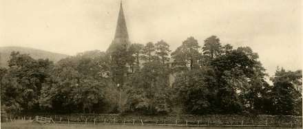
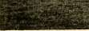
TWEEDSMUIR CHURCH
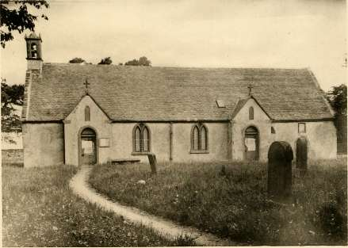
DRUMMELZIER CHURCH.
Northgate of Peeblestoun, to provide a stipend for the Schoolmaster of
Peebles for training: up the children in learning- and virtue. Marie and
IRct "Ibeirs Isobell appear to have died shortly after, for in the retours of heirs for ipceblcssbtrc.
Peebles, Margaret is served as their heiress in the lands of Wythauch
on the 20th July, 1652.
The arranging and printing of the Register of the Great Seal does not at present (1900) go beyond the year 1651. It is impossible to say what matters of interest may not be forthcoming when this is completed by the authorities and can be consulted.
A sequence of entries in the parish registers of Tweedsmuir is curious and characteristic :—
"21st December, 1651. This day Johne Twedie lawful sone to Patrik Twedie in Wester Oliver and Elizabeth Ladlay in Eister Oliver wer proclaimed for the first tyme the said Johne obliging himself to produce ane IRcg. Marriages testimonial from the Kirk Session of Grayfriers where had remained these six years by past &c."
"28th December, 1651. This day Patrik Twedie of Wester Oliver did produce ane testimoniall from the church of Edinburgh for his sone Johne Twedie .... and the said Johne Twedie and Elizabeth Laidlay were'*Jf g ' e J|JjJ,» 9C8 proclaimed for the second tyme."
"4th January, 1652. This day Johne Twedie and Elizabeth Laidlay
were proclaimed for the last tyme, and being; inioyned to consigne thair
pandis according to the order of the Sessione and pretending want of
moneyes, Thomas Twedie feir of Oliver and brother to the said Johne, and
Walter Twedie brother to the said Elizabeth Laidlay, did bind themselves 2».2>. 1652.
before famous witnesess, that if the said pairtties did not fulfil thair bandis
within fourtie dayis after thair proclamationne they sould pay thair bandis to
the Sessione," &c.
"22nd January, 1652. Johne Twedie and Elizabeth Laidlay were IRcg. Marriages
• 1 r 1 iii i-ii 11 T i- 1 JTweeOsmulr.
married alter they had bein proclaimed three severall Lordis dayis at our
Kirk of Tweedsmuir."
" 14th March, 1652. It was declared to the Session that Elizabeth Laidlay spous to johne Twedie sone to Patrik Twedie of Wester Oliver m was brought to bed of ane chylde within six weeks eftir thair marriage Gwee&smulr. notwithstanding of their former declarations, and they were ordered to satisfy church discipline."
"24th March, 1652. Was baptised Walter Twedie lawfull sone to Johne Twedie, the said chyld was presented by Patrik Tweedie father to the said ^f ^ g a i?f. ,e " 11? Johne becaus he himself had not eased his satisfaction for his fornication."
"3rd October, 1652.—This day Elizabeth Laidlay spous to Johne Twedie made public satisfaction for fault above referred to ;" [this child died c W eec>0niuir. shortly after.]
The tyranny of Puritanical times again makes itself felt under date 24th July, 1653, in the registers:—
" Thomas Tweidie of Oliver (and two others) delated to the Session for profanation of the Lord's day by drinking in the time of divine service."
Amongst the original Oliver papers is found the form of oath, on vellum, dated 14th September, 1653, taken by John Tweedie the younger as a burgess of Edinburgh, where he was apprenticed to John Tweedie the elder ; it runs as follows :—■
" The aith of ilk burgess made and given be him at his admission. I doe swear that I sail be true and faithfull to the Commonwealth of England as it is now established without a King or Hous of Lords. And in order thereto I sail be obedient unto the just and good government of this cittie and burgh of Edinburgh I sail to the best of my power maintain and preserve .... thereof and according to my knowledge and abilities sail doe and performe all such art is and .... as doe belong to a burgess of the said cittie and .... so help me God."
The reference to the constitution of the realm of England is curious.
Peter Dunlop is served heir of Marion Tweedie his gudame (the daughter of the late John Tweedie, Tutor of Drummelzier) in the Kirklands of Hopkailzie and Drummelzier on the 20th September, 1653. The same Peter Dunlop is referred to again in the Retours of heirs for Peeblesshire in 1658, as son to the " Umquhile Mr. William Dunlop and heir of Marion Tweedie daughter to John Tweedie tutor of Drummelzier his gudame."
More church discipline follows on record in the parish registers of Drummelzier:—"14th May, 1654. Archibald Tweidy in Drummelzier complains that William Brown had slandered him alleging that the complainer had sold him ten ewes but had only delivered nine."
''17th September, 1654. Informed that Alexander Tweedie of Kingle-doors should have twice or thrice broken the Sabbath day by riding towards Edinburgh and coming from it on the Sabbaths and by staying from the eftirnoonis sermon in Tweedmoor Kirk to speak of worldlie businesses. Ordanis him to be cited." At a subsequent diet, he was "ingenuous in confessing" and was ordained to be rebuked by the minister, which was done, "and Alexander Tweedie promised not to do the like again."
Alexander, however, was in trouble again next year, for on 9th May, 1655, he is fined ,£20 Scots for creating a disturbance and troubling the fair on Beltane day at Peebles.
" James Twidie and his Spouse" are granted sasine of an annual rent furth of Pomphrastoune on 28th June, 1655, and Margaret Tweedie of the lands of Whythauch in the shire of Peebles on 26th January, 1656.
More evidence of the tyranny of the church is found in the parish registers of Drummelzier :—"28th December, 1656. "Thomas Tweedie lawfull
sone to umquhill James Tweedie of Drummelzier desiring a testificat the
Session for several reasons referred the business to the Presbyterie for advice."
"14th January, 16=57. Adam Tweedie complained that Alexander ^S- baptisms
. , . ©rummel3ter.
Murdosone should have called him ' witches gate'—also that the said
Alexander had been in drink on Hansell Monday in Marion Tweedie's
house—order him to be cited." At a subsequent diet Alexander Murdosone
acknowledged his offence and was ordained to acknowledge the slander
before the congregation, which he did on 8th February, 1657, "and Adam
Tweedie did forgive him."
"21st June, 1657. Ther was debarred fra the table of the Lord IRefl- JBapttams
for various causes, inter alios for scandalls unremoved Archibald Tweedie."
"20th September, i6s7. Informed that Archibald Tweedie in Peebles 5 efl ' baptisms
... .... . 2>rummel3ter.
should have been overtaken heir in drink, the minister is desired to write
to the minister at Peebles to cite him."
" As also that Thomas Tweedie should have thrown a pint stoup
at William Broune in thair drinking ordains him to be cited William Broune
having confessed the same already."
"27th September, 16=;7. Thomas Tweedie confessed his casting' the-lte8»MSapttsme ... Brummeljler.
stoup at William Broune being provokit be him thereto bot refused he was
drunk or had been drinking with Archibald Tweedie for which he was
rebuked."
"26th September, 1658. Archibald Tweedie and Marion Tweedie IRcfl- Marriages proclaimed pro 2 do - Said Archibald lying under a scandal of fighting &c, to be rebuked before the congregration."
"5th June, 1659. Debarred from the Lord's Table—for ignorance IRcQ- 3Baptf6ins Margaret Tweedie—for scandals living in malice and envy Archibald Tweedie and Marion Tweedie his wife; (and others)."
"4th September, 1659. This day Johne Tweedie of Wester Oliver did
produce ane testimoniall of his good behaviour and conversatioune and of
his whole familie, from the South east Session of the Kirk of Edinburgh
betore ... during all the tyme 01 his keiping nous in Edinburgh untill awee&smutr.
the terms of Witsonday last at which he removed and came to our
congregatioune."
David Tweedie, the Laird of Kingledoors, married, in 1659,
Margaret Hunter, a daughter of Hunter of Polwood. Her brother was
Robert Hunter—known as " Uncle Robert"—the owner of the famous dog
Algiers, and the chief actor in the great Polmood litigation.
On the 23rd August, 166^5, the Parish Register tells us that Elizabeth
Laidley spouse to Johne Tweedie of Olipher lodged a complaint against wife
of Thomas Laidley in Nether Olipher.
Among the MSS. of the Marquis of Ormonde appears a petition 2t.2>. 1664.
dated 24th September, 1664, addressed to Thomas Earl of Ossory, depute
of James Duke of Ormonde, Lord Lieutenant of Ireland, by Patrick Tweedie, praying a direction to the Surveyor General's Deputy to grant him a certificate of certain lands, and again, four years later, is another petition by Patrick Tweedie for recovery of an amount due to him by "Edward Bolton of Colonel Dillon's troop," dated 19th September, 1668.
William Tweedie was one of the Regents of Philosophy in the College of Edinburgh for some years prior to 1665, in the February of which year he died.
The following extract from the parish registers of Drummelzier is interesting:—"7th March, 1669. There being no Session kept these sundrie years becaus the King and his counsell had by publick proclamation discharged Synods, Presbyteries and Sessions and the Government of the Church be Act of Parliament had been altered from Presbyterie to Prelacie which government the minister could not allow nor submit unto and the Session had been reduced to three, did elect (inter alios) David Tweedie of Chapelkingledoris to be an elder admitted to office 28th March, 1669."
John Tweedie of Edmonstone was summoned on the 5th July, 1672, with man)- others, to appear before the Lords of Council at Edinburgh to answer for the assembling- of the Covenanters in the Castle of Bog-hall at
o o
the instance of the Dowager Countess of Wigtoun.
In the Tweedsmuir parish register the following appears :•—" 1 ith December, 16S1. No Session all this while the elders all deserting ordinances except Walter Tweedie."
Again we find:— "12th November, 16S2. This day was baptised Adam Tweedie eldest lawful sone to Johne Tweedie in Tala: witnesses Alexander Tweedie in Cockiland, Adam Brydon in Mossfennan brother in law to the said Johne, and because the said Johne had not frequented ordinances formerly he did find the said Alexander Tweedie caution and Adam Brydon to live regularly under the penaltie of 20 lib."
There was a serious riot in Peebles town on the 13th February, 1682, in which certain of the Tweedies were, of course, concerned. It was all about the letting of a small piece of common land by the provost and baillies of the burgh, an act which a number of people considered an infringement of the public rights. Accordingly, on the day in question, when the Magistrates were administering justice in the Tolbooth, a great crowd came to protest against it, and ended by threatening the provost that he "should be sticked as provost Dickison was." Two of the ringleaders were committed to prison, from whence they were forcibly rescued by a number of people, with whom was John Tweedie. It would seem that the authorities succeeded in overpowering the riot at the time and securing their prisoners again, along with their rescuers, for on the 2nd March a number of women, who are all named, stormed the prison again, rescued the prisoners, John Tweedie among them, " and
went to the croce of Peebles with them and there drank their good health
as the protectors of the liberties of the poore, and the confusion of the
Magistrats and Council and took up with them (on the platform ot the
cross) stones to stone to death such as should oppose them ; and thereafter
they being about thre hundred persons divided themselves several companies,
and every company convoyed home a person and drank their good health
to the great astonishment of the honest and well meaning people." So
runs the indictment of the riot lodged by the provost and baillies, and
later on they succeeded in getting the principal rioters, John Tweedie
included, found guilty by the Lords of Council and committed to the
Tolbooth in Edinburgh and deprived of their burgess rights.
The remainder of those concerned in the riot were dealt with by
the Local Magistrates, and condemned to fine or imprisonment, and
loss of burgess rights. Consigned to the Tolbooth of Edinburgh, the
delinquents, in apparent repentance, petitioned the Privy Council to let
them out, on the ground that " they are poore ignorant men who did not
think they could have given any offence to the Magistrates of Peebles
and that some of them are valetudinary persons and not able to undergo
the restraint of a prison without impairing their health." On 31st March,
the Lords liberated them on their giving caution for future good behaviour,
and they were also ordered to go before the Magistrates and Council Chambers'
t n li u ia-ij j r 1 • t 1 t, ©ecblessbtre
of Peebles on the 12th April, and crave pardon of their fault. John p. 109.
Tweedie seems to have been Dean of the Guild for the Burgh of Peebles .. „
& , ffiorocr Counties
in 1692, but whether he was the same as the John Tweedie concerned Magazine
. . A , vol. 1 p. 35.
in the not, or not, does not appear. ^ j, l692
On the 1st July, 1690, William of Orange finally shattered the cause of King James II. at the battle ot the Boyne in Ireland. An officer from Tweeddale, of the name of Tweedie, fought in the ranks of William's army, and his sword is yet preserved by his descendants. In recompense for his services he received a grant of lands in Ireland, where he settled permanently and founded a new branch of the family in County Leitrim ; there they remained until about the year 1822, when the three brothers Robert Tweedie, Joseph Tweedie, and James Tweedie, the then representatives of the family, migrated to the Province of New Brunswick, where they and their descendants have risen to eminence, and amongst their numbers is included the Honourable Lemuel Joseph Tweedie, the distinguished Premier of the Province.
James Tweedie of Oliver had a charter from Thomas Earl of Haddington, his father having disponed the estate in his favour on 16th April, 1694. JDurkc 3tan6e0
There was still a tower standing at the Beild in 1696, for on the „ isel.
24th March in that year, Thomas Tweedie of Oliver had a difficulty with his
tenant there, William Tweedie, who is described as a violent and papers.
masterful man, and had to take summary measures to eject him.
CHAPTER V.
A.D. 1700.
AT the beginning of the 18th century a Captain Burt visited Scotland, and in a book describing his journey he gives his - impressions of Tweeddale, which help to bring the scenery of the district vividly before us. 5ournefi tbvoiuib The landscape was a bleak and bare solitude, destitute of trees,
p t g5 # and abounding in heather, morass, and barren hills. Cultivation was
found only in dirty patches of crops on ground surrounded by heather Social Xife of , , ^, . , K. , .1-1 . L
Scotlano,<Srabani and bog. 1 he inhabitants spoke an uncouth dialect and the poor
VOL 1* 2. ]ived in hovels.
This condition of things seems to have so depressed Captain Burt that in vain did nature present to his gaze her finest and grandest aspects. The roaring torrents ; the towering mountain height; the boundless moor, rich, then as now, in purple glory,- all were powerless to obliterate the impression of the dreary solitude.
3bio p. 4. The number of modest estates was great, and smaller gentry
abounded. A gentleman might have a property wide in range of land, but producing rents miserably mean, all in kind, so many sheep, eggs, poultry ; so many bolls of barley, meal, and pease.
Mansion houses, of course, varied greatly in style and dimensions according to the rank and income of their owners. The massive castellated
Jbiop. 5. buildings of nobles and chiefs, generally dating from the sixteenth century,
looked down upon the more homely dwellings of two storeys with corbel
stepped gable roof. Clumps of trees were planted for shelter; ash, elm,
and sycamore, clustered so close to the walls that they blocked out light
and air from the small narrow windows, with their tiny three-cornered
panes of glass. Beside the house was the inevitable dovecot, or pigeon flSacftag's 1 & r &
Sonnies tbtougb house. The courtyard was usually formed by the house having a
„ 27? projecting granary and byre on one side, and a projecting barn and
IRamaag vol. li stable on the other. In the garden behind or beside each house grew p. 100. r .
a great variety of shrubs and flowers, partly for pleasure, but mainly
for use. Within doors arrangements were of the plainest. The rooms Social life in . ., , , . , , , . ,
Scotland ©rabam were low ceiled, paper hangings were unknown, and only in large mansions
vol. t p. 7. were the walls covered with tapestry, panels of wood or gilt leather. On
the dining table lay the handbell, no carpets covered the floors, while
but few of the chambers were what were called " fire-rooms," most of them
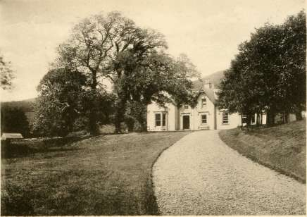
HALL MANOR.
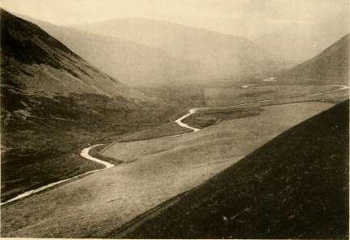
THE VALLEY OF MANOR.
being destitute of fireplaces. The beds, generally, were closed like a box IRamsag vol. it.
in the wall, or in recesses with sliding doors, but in great houses they
stood out in the room, with heavy curtains of plaidings which the household
had spun.
Except on state occasions the dining-room in average sized country Social TLifc in r & -iii Scotlano,©rabam
houses was unused, left dark, dull and musty, unventilated by the sashless vol. i. p. 8.
windows, while dingy ancestral portraits stared vacantly from their frames
on the empty apartment.
It was in the great bedroom that the family lived chiefly. There
they took their meals, there they saw their friends, there at night the
family gathered round the hearth, there the girls spun ; and it was only
after ''family exercises" that the household dispersed and the heads of the
family were left to rest and sleep in the exhausted air. By five or six „
... ... lRamsag's
o'clock in the morning the laird was up, having taken his "morning"—a Scotland vol. fl
glass of ale or brandy—before he visited his " policies " and his stable and p *
fields. At eight o'clock breakfast was served, consisting of oatmeal cakes or
barley bannocks and perhaps mutton, washed down with ale. At twelve or
Soniccvlllc one o'clock came dinner, at which the Master of the house presided with his p t 33^
hat on his head. Each person was served with a wooden or pewter plate,
and it was only later that china or earthenware plates appeared.
Only in summer or autumn could fresh meat be had, at all other Social
times the family subsisted on salted meat with occasional game. Vegetables
were not served on table, sweets there were none, and the drink was ale
and sometimes sack or claret. At seven or eight came supper, a substantial
meal of the same type with ale and claret, but before that repast was the
essential " four hours" at which ale and wine, and later on tea, was drunk.
A bowling green was the usual adjunct to every country house. The
country gentry dressed in a plain, homely and even coarse way, all clothes
being home-made ; while but one suit or costume formed the wardrobe of a
lady for long years. Even in Edinburgh society, young ladies, daughters of
country gentlemen of good position and means for those times, were content
with one silk gown and the occasional use of their mother's, which she had
got when she was as young as they. Packmen came round with their pack-
horses laden with a small assortment of wares for cottage and mansion. scotlano,<3cabam
Thus the quaint homely life went on, and the friendly contact of the laird w1, '• p * '
with his people, and the lady with her servants over the spinning, wrought
a kindliness and attachment to the family which was a marked and pleasant Ibistorg ano
. jpoetrg of tbe
feature in old stay-at-home Scottish Society. The Tweedies, for instance, Scottish JBoroer.
grew their own flax on Oliver, and the ladies of the family made it into
thread on the small spinning wheel of the day. The laird was called by
the name of his land and not by his own surname, while his wife bore the
title of " lady " not " Mrs." and was spoken of as her " Ladyship " in full
deference, and addressed as " My Lady so and so/' naming the name of the
estate and not the family surname.
There was little coin in circulation ; gold being never seen, while
silver was exceedingly scarce ; the openings for sons of gentlemen were
very few. It was not yet the fashion for the Scots to enter the army
JbiD. pp. 33=35. and fight the battles of the English; the eldest son not infrequently went
portraits mto a lawyer's office for a while to pick up some knowledge useful for
pp. 1=104. his future estate, and it was in trade that the younger sons of good
©unbars Social f am }l v often sought a livelihood. It was not considered beneath their Xtte p. 143. J &
dignity to become apprentices to " merchants " (or shopkeepers), or even to
<nr Matter Scott j°' ners an d ship carpenters, or they became tenants of small farms on the
P. 7. family estate, where they lived humbly in a small thatched farmhouse and
tilled a poor hundred acres or so, though they were members of the best
families in the land.
According to the parish registers and other extant records, at the end of the 17th and beginning of the iSth centuries there were Tweedies in Oliver, Badlieu, Tweedhopefoot, Cockieland, Kingledoors, the Wrae, Stanhope, Dreva, Patervan, Wester Oliver, Hawkshaw, Over Oliver, Easter Oliver, Hairstanes or Hearthstones, Ouothquan, Nether Menzion, Edmonston, the Beild, the Crook, Nether Oliver and other places. Many of their men, the farm servants and such like, were also Tweedies, and the parishes of Drummelzier, Tweedsmuir, Stobo, Kilbucho, Broughton and Glenholm, and the adjoining districts were full of persons of the name ; besides which there were many Tweedies resident in the burgh of Peebles, where members of the family rose to eminence, and from time to time held the important offices of Provost, Treasurer of the Burgh, seats on the Council and other posts. a.©. 1704. Thomas Tweedie of Oliver, and Robert Tweedie of Kingledoors
ScoU.wfc vol"!! are amon g tne Commissioners of supply nominated for 1704 by Act of P. 141. Parliament.
H.2>. 1706. Following out the not uncommon usage of the times, Thomas Tweedie
of Oliver, on the 10th April, 1706, apprenticed his younger son John Tweedie for five years to Robert McKinley, a Merchant Burgess of Edinburgh, to learn " his art and trade of merchandise." What the trade was or the premium paid is not shewn in the quaint articles which are yet in ©riginal ©ltv>cr existence, but among other things it is stipulated that John Tweedie, for his better insight in the said art and trade of merchandise," shall be sent at least " one voyage to Holland or Norroway as best shall please the said Robert McKinley," who also undertakes to keep and entertain his apprentice sufficiently at bed, board and washing, but apparently no provision is made for clothing. Walter Tweedie of Hairstanes is a witness to these articles, which were not discharged until 16th April, 1713.
papers.
James Tweedie of Kingledoors is served heir to his father, the late ^•®-17l2 « Robert Tweedie of Kingledoors, who died June, 1711, as heir special in i"?. 1 ^f f * etr6 Chapel Kingledoors and half of Over Kingledoors on April 18th, 1712.
Some misfortune seems to have overtaken the laird of Oliver (Thomas Tweedie) in August, 1713, in Edinburgh, judging from the following letter:—
MOSFENNAN, jt/i of August, 171J.
Sir. —I have sent this servant to know how you have rested last night and I
u 11 u I ir * 1 u it *- ui c a ,. u <- ©rifllnal ©ltv>cr
shall be to see you my self to-morrow. I shall trouble you no furder at present but lpapgjg,
to beg your pardon and forgiveness for my sad misfortune and assure you that ever
after this I shall be a ready servant of yours and all your family in whatever lyes in
my power and I doe hereby obleidge myself to satisfy all expences you have been or
may be att upon this sad occasion and I am,
Dear Sir, in great concern,
Very much your most humble and
obedient friend and servant,
The Laird of Olifoure, WM. SCOTT.
Edin :
It is difficult to speculate what had happened; there is nothing whatever, curiously enough, to afford any clue further than to show that William Scott felt himself in some way to blame, and that Thomas Tweedie had suffered some personal physical injury. Can it have been a duel ? If so were Scott and Tweedie the principals ? or had Tweedie acted as Scott's second and been wounded in his own encounter with the second on the other side ? it being a not infrequent practice for the seconds to fight as well as the principals. Or had it been a brawl over the wine the night before ? Possibly some day evidence may turn up to show how entirely wide of the mark the surmise is.
A quarrel of some sort broke out in 1714 between Thomas Tweedie of Oliver and James and Thomas his sons on the one side, and the Hunters of Polmood on the other ; the Hunters found it necessary to jp a p e "g ®" ver call in the aid of the law, such as it was; and the Tweedies were bound over in heavy penalties to keep the peace, and to appear and answer the complaint. The proceedings were dated 20th January, 1714, while at the same time the Tweedies took similar steps against the Hunters, alleging that they invaded their lands, and did much damage, and threatened them daily with bodily harm and slaughter. What it was all about and whether there had been any fighting is not very clear, but the idea not unnaturally suggests itself that the event referred to in William Scott's above letter of August, 1713, had something to do with it.
Joan, daughter of Thomas Tweedie of Oliver, married James Kello Original ©liver of Westborrow at Biggar, the marriage contract being dated 7th April, A^P" 8 ' 1715, and Thomas Tweedie finally discharged his liability under it on the 30th July, 1720.
H
Amongst the Oliver papers are many shewing the difficulties which the laird of Oliver suffered, in common with all other lairds, owing to the scarcity of actual coin, although possessing plenty of goods and security ; and for many years the regular borrowing and paying back went on. Paid as the lairds chiefly were in "kind" there was little money at their disposal; some shopkeepers lent money on security, but the chief means of raising funds was through the country " writers," and hardly a laird or Lord was free of debt, or had an estate unburdened ; he could not borrow a few pounds without getting two or three neighbours to become security as " Cautioners." There was many an interview in the taverns of Edinburgh, or of country towns, when business was transacted with the lawyer, anxiously discussing ways and means.
Thomas and James Tweedie of Oliver, father and eldest son, came to an arrangement, in 1719, under which by a deed dated the 14th May, in that year, the lands of Oliver and Beild were made over to the son, who in return engaged to pay his father an annuity partly in cash and partly in kind, and entered into certain covenants for the upkeep of Oliver House and the Beild.
In the year 1720, on the 29th April, James Tweedie the younger, of Oliver, rode into Moffat, and having put up his mare at a tavern, kept by one James Welsh, went about his business, or his pleasure, whichever it may have been. On returning, however, between eleven and twelve o'clock at night, he found his mare gone ; neither Welsh, his wife, nor his serving man Adam Glendinning was to be found, but he learnt from Joan Waugh, a woman he met in the house, that John Graham, the " regalitie" officer, had taken the mare away " violently, under cloud of night," out of the stable. James Tweedie procured two friends, Patrick Aichinson and John Williamson, and went at once and called Graham up and demanded his mare, to which the officer replied, that he had a warrant for it. What the upshot of it was, or why it was done, does not appear; Tweedie laid an information that very night, but the result is not known.
Thomas Tweedie of Oliver having got into trouble, in 1724, for non-payment of his Doctor's bill, was "apprehended prisoner by virtue of letters of captione raised at the instance of John Blair, Chyrurgeon," and others, for non-payment of 1,800 merks. James Tweedie of Oliver became surety for him, and he was released on 25th February, 1724, the bill being paid on the 4th June, 1724.
In 1727, James Tweedie the younger, of Oliver, who appears to have been the moneyed man of the family, made arrangements with one John Hislope to rebuild Beild, or rather to build a house there instead of the old Tower. The contract is dated the 30th March, 1726, and it is curious that, e>:cept at the commencement, the parties are throughout referred to by their
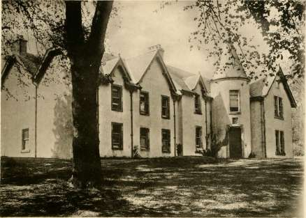
THE HOUSE OF QUARTER.
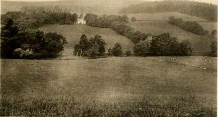
THE HOUSE OF QUARTER.
Christian names only; it contains an exact specification of the work. The contractor is to have the use of the great timber and the iron work of the old tower, and to be furnished with sand and stone, by James Tweedie. The latter also had a further contract with Alexander Brunton for part of the work on this house, and fell out with him, or as the record says, " happened to disagree" on certain points, and went to arbitration at Edinburgh on the 13th February, 1739.
Thomas Dooly was put to the horn, and denounced a rebel on ©rtginal ©liver 4th September, 1727, at the instance of James Tweedie, the younger, of Oliver.
Among the Quarter papers there yet remains the contract of marriage entered into between Thomas Tweedie, then in Kingledoors, and afterwards ©rfginal Quarter of Quarter, with his wife Mary, daughter of Alexander Stevenson of Dreva ; lP a P ec8> it is dated 1st March, 1728, and it is noticeable that for the last time the name is written Olifer instead of Oliver, as it came afterwards to be spelt.
James Tweedie of Oliver was admitted to the Freedom of the Burgh ©riginal ©liver of Peebles on the 15th October, 1731, in due form before the Provost, * ,et6. Officers, and Council of the Burgh.
There was a William Tweedie in Eastoun, of Stobo, who was befriended Original ©liver by James Tweedie of Oliver, and a debt paid for him by the latter on the 1st February, 1732, to James Murhead, the creditor.
James Tweedie of Oliver (Oliver being spelt thus for the first time) 2l>2>. 1735. had some trouble with one Alexander Wright in 1735, which resulted in p a n ers m a lawyer's bill running from 16th October, 1735, to 25th May, 1737, as due to William Johnson, a writer in Edinburgh ; the amount of the account is .£181 9s., and it ends with the item, "To my pains ^"50 8s." It was finally discharged in 1741.
John Tweedie, in Symington, formally made over all his property to ©rlglnal his sons James Tweedie and John Tweedie, subject to certain annual papeca. payments by a deed dated 30th December, 1735, from the details of which it is shewn that his daughter Grissell was the wife of James Lowrie of Symington ; his daughter Janet was married to Mark Braidwood, in Kilnpatlees, and that his youngest daughter's name was Marion.
The Edinburgh apprentice John Tweedie, the younger son of Thomas S»2>« l7 3S. Tweedie of Oliver seems to have prospered, and married Helen, the service Ibeirs daughter of John Brown and Margaret Pursell, to the latter of whom Scotla »&-Helen is served heir general on the 14th March, 1738.
Thomas Tweedie, the second son of Thomas Tweedie of Oliver by b.S). 1740.
his wife Christian Williamson, was born 6th December, 1691 ; he took his
portion from his brother James Tweedie the younger, of Oliver, on 22nd
December, 1719, exonerating him from all liability, and unlike the prodigal
son who had done the same, he evidently did well, lor he purchased the papers.
house and estate of " Quarter" in the year 1740. This may be said to be the beginning of a new branch of the family, and it is from him that the present line of Quarter and Rachan descends. He married Mary, the daughter of Alexander Stevenson of Smithfield in Peeblesshire, and on the death, in 1837, of the last Tweedie of Oliver the male representation of the family passed to his descendants the Tweedies of Quarter. Oliver itself, however, yet remains in the possession of the Tweedie-Stodarts of Oliver, who are the direct descendants on the female side of the Oliver line.
According to the not uncommon practice of those days, to which reference has been made, it would appear that James Tweedie of Oliver apprenticed his youngest daughter, Margaret, to Margaret Lindsay, a milliner of Edinburgh, to learn the business, the indentures being duly endorsed, and discharged with a certificate of faithful service in April, 1743. This was, in those days, thought in no way beneath the dignity of a family, and the fact that the younger sons and daughters of good families and even of nobles followed the calling of a village tradesman is the clearest proof of the poverty of the gentry. Lady Balgarran and her daughters were instances of this, they even advertised as makers of sewing thread, and the papers in which they put it up had the family coat of arms printed upon it. They made it themselves and sold it retail ; Mrs. Fletcher, wife of Henry Fletcher, the brother of the famous Fletcher of Salton, wove Holland linen and sold it herself; and old Lord Kirkcudbright, the glover, thought it no disgrace to himself to stand at the entrance of the ball room in the Assembly Close, off the High Street, at the top of the stairs selling white gloves to the dancers as they entered. At the election of peers for the House of Lords his lordship claimed his right to vote, and at the ball which closed that ceremonial the old glover joined his brother peers, and on his death the title was legally confirmed to his son.
James Tweedie of Oliver was declared a rebel under letters of horning issued by one Michael Anderson on the 23rd December, 1741, and from the same papers it appears that there had been dealings between Anderson and Tweedie earlier in the year about the leasing of some land, out of which the difference probably arose. On the same day, 23rd December, 1741, James Tweedie obtained letters of discharge, having apparently satisfied Anderson and also paid his lawyer, one John Douglas, £1 10s. oxl. for law costs.
In the momentous year 1745 there is but little record of the Tweedie family and nothing to show that they took any active part. Their day for disturbances seems to have been over, and their appetite for rebellion gone. John Hay of Restalrig, a direct ancestor of a later generation of the Quarter family, was "out," and filled the office of Treasurer to Prince Charles Edward throughout the rising. He was one of the last to take
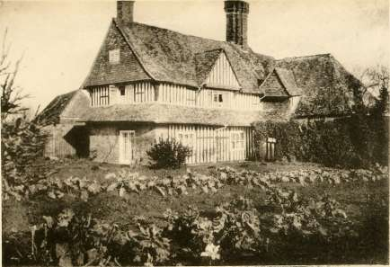
THE OLD FARM HOUSE IN RAWLINSON (ABOUT A MILE FROM RAWLINSON
HOUSE ITSELF).
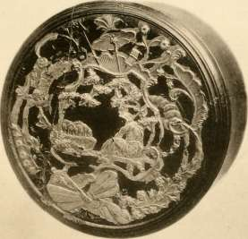
THE SNUFF BOX OF PRINCE CHARLES EDWARD, 1745. NOW AT RAWLINSON HOUSE.
leave of the Prince when he embarked for France again. When the Prince bid John Hay farewell he presented him with his snuff box, still in the possession of Hay's decendants, the Tweedies of Rawlinson, and tradition says that it was the last article of any value, except clothing, that the Prince had about him. It is a small round box of dark tortoiseshell with silver mountings.
The Tweedies of those times, in common with most of the Lowlanders, appear to have been unfavourable to the enterprise, and when the Highlanders came through, Thomas Tweedie of Quarter with his family abandoned his house and retired up Tweeddale to Kingledoors, which he had a lease of at the time, in order to escape from the Highland army, whose invasion was regarded much as an inroad by the hill tribes of Afghanistan would be looked upon in India at the present day. We get a glimpse of him from the records of the family of Burnett of Barns. Captain John Burnet, of Colonel Grant's Regiment of the Highland Army, was taken prisoner at Carlisle in 1745, and carried up to London, from whence on August 30th, 1746, he wrote an appeal to his kinsman, Burnet of Barns, whom he had protected when the Highlanders marched through, begging him to use all his influence to preserve his life. " I must repeat I've a dependence on you, farewell, and expect you'll lose no time." In answer to this appeal the following certificate was promptly returned:—
" These are declaring that when the rebells were in this country,
Mr. John Burnet of Campfield was along with them, who not only did
all in his power to prevent the Highlanders from committing any abuses,
but obliged them to pa}' for what they got particularly ; they took both
corn and straw from other tenants as well as me, for which Mr. Burnet
procured payment. They likewise carried off some horses and carts which
the said Mr. Burnet caused to be returned. That his deportment in general
was civil and obliging, and that the country was much obliged to him is
attested by
" Thomas Tweedie, Tennent in Kingledorse,
" Andrew Murderson, in Drumelziar.
"That Thomas Tweedie, Tennent in Kingledorse, and Andrew 3be jfamilg Murderson, in Drumelziar, are well affected to Government in Church and „ 43
State is attested by me ■ —, Minister of the Gospel at Drumelziar,
September, 1 746."
It is satisfactory to know that Captain John Burnet, of Grant's Regiment, was acquitted and returned to the North in September, 1748.
There is still in existence an old wine merchant's account for wines ©rlglnal ©liver and spirits supplied to James Tweedie of Oliver in the years 1745-1747 ; lpaper8, the items being claret, sherry, shrub, brandy (in ankers), Lisbon (in mutchkins), mountain, and whiskey, and the total amount for the two years,
H*
}
y
^50 16s. 2d., a considerable sum for a Tweeddale laird to spend on anything in the way of luxury in those days. Tweedie appears to have kept a running account, ordering in whatever he wanted and paying whenever he could.
James Tweedie of Beild (the son of Tweedie of Oliver) was apparently a studious man as the place and times went, for he had an account with one Gideon Crawford, a bookseller, and regularly took in The Scots' Magazine, besides purchasing a volume of Warberton's sermons for more solid reading. There is a bill for the supply of the former for the years 1746, 1747 and 1748, paid in July of the latter year.
David Tweedie of Broughton Mains married Janet, the daughter of the late Richard Burn of Knock, in Skirling, in 1751, as appears from the agreement or contract dated 21st February, 1751, at Wintermuir; it is in the usual form with the customary provisions.
Something quite after the fashion of the good old days happened to Thomas Tweedie of Oliver in 1753. It seems that he had some difference with the Crawfurds of Muttonhall, and on the 10th July in that year they "insidiously and violently attacked" him as he was riding on the high road to Linton, a little to the North-east of Hairstanes. Andrew Crawfurd, his two sons, William and another, whose name is not mentioned, with several others, laid in wait there for Thomas Tweedie, who had nothing but a riding whip to defend himself with, and was seriously hurt, and his horse as well. The Crawfurds rushed upon him shouting, "Knock him dead!" and he would, it is said, have been murdered had not help arrived. Thomas Tweedie lodged a complaint before the Sheriff Deputy of the Shire of Peebles, but what redress he obtained is not known.
A succession of documents of family interest is found in the Quarter papers, among them being the contracts of marriage between Alexander Welsh of Hearthstone and Marion, eldest daughter of Thomas Tweedie of Quarter, dated 8th June, 1750, in which the young lady writes her christian name as " Marrion," and Humphrey Welsh, the father of the bridegroom, signs ©rlglnal ©uarter his as "Umphra"; the Dispositions, dated 22nd February, 1753, under which Thomas Tweedie of Quarter settled his earthly affairs with his son Alexander, and made provision for the care of his children generally, in which his surname is given as " Tweidie," and his wife's name is written "Steinstoun" instead of Stevenson; the contracts of marriage dated 9th June, 1754, between Christian, the second daughter of Thomas Tweedie of Quarter and John Tweedie of Nether Minzon ; 18th June, 1766, between Ann, the third daughter, and the Rev. Charles Nisbet of Montrose; 1st April, 1769, between Jean, the fourth daughter, and George Stodart of Walston ; 5th December, 1771, between Mary, the fifth daughter, and David Stodart of Eastoun.
Some curious old love letters yet exist written by Thomas Copland of Leith to Margaret Tweedie, the third daughter of James Tweedie of Oliver. She was born in 1724, and the letters are interesting as illustrating the manners and customs of the time. They extend over the years nwj erg 1753-1764, some time after which she appears to have rewarded her persistent admirer by marrying him. The gentleman's attachment, however, seems to have begun even before 1753, for in that year, in the first of the letters he apologises for his long silence, preserved because he had understood her affections were already engaged and he would not embarrass her by advances. Death, however, has now rid him of that rival; he feels "at liberty again to put in to supply a vacancy," and continues:—
" Dearest on earth, should I attempt to describe the strength of my passion for you I might soon exhaust my fund of eloquence but not come up to the truth of the case. May heaven prove propitious to my earthly treasure! O how my heart akes when surly winter threatens so soon to lay his icy hand on our world where you reside in so inclement a place!"
He concludes by wishing that she and her mother would come to town for the winter, sends her some books for her leisure hours, and subscribes himself " Your unalterable lover, Thos. Copland."
The lady seems to have taken time to consider, and eventually decided not to reject him altogether, for he writes again on 31st March, 1754, addressing her as ''Fairest Charmer," and begging for an answer to his suit. He encloses a poem and concludes " I am, comely Fair, Your captive begging a liberation, Thos. Copland."
It is interesting to note from this letter that the post took a month to go and come from Leith to Tweeddale in the year of grace 1754, and it is a matter of regret that the poem referred to has disappeared. The next existing letter is two years later in January, 1756, and we give it as an example of the love letter of the period:—
Dear PEGGY,—I received or rather saw your—I do not know what to call it, where you said I was like green wood, &c, but in the image you have assigned me the wrong part, for the bellows seems only to be laid to my hand... . When the ©rffl'»al ©liver frame of nature is labouring in agonizing pangs and the Princes of the Earth breathing war and desolation, when both natural and moral world seem to be in a sickening ferment, 'tis you only can give me happiness and tranquility in a conscious security of your intimate affection... . Let me have an epistle at large from your own hand ; be not always haughty and niggardly to one who hates the shut hand and the narrow heart, and cannot live on crumbs. But being just now in a hurrie I am oblidg'd to subscribe myself, Dearest, Your invareable adorer,
THOS. COPLAND. Leith, January 22nd, 1756. Miss Peggie Tweedie, att Moffat.
The two remaining letters are dated some seven years later; the first, dated 5th October, 1763, is addressed "Miss Peggy Tweedie at
Moffatt with a pound of tea," and begins "Dear Miss"; the other, dated 3rd October, 1764, is addressed similarly but only " with half a pound of tea," in it he remarks :—" I found great alteration in Leith by death at my return, some persons not the least considerable being carried off; death is shutting his arrows everywhere and mankind ought to be preparing against his attacks. Make my compliments to Lady Oliver," and concludes, " I am, with all imaginable esteem, Dear Miss, Your most obedient humble servant, Thos. Copland."
Notwithstanding the falling off in the fervour of the address and the amount of the gift an " insurmountable reason" referred to in the letter of 5th October, 1763, must have been shortly after surmounted, for it is evident that about that time the lady became Mrs. Thomas Copland. The marriage does not appear to have been a success from a worldly point of view at all events, as by the autumn of 1767 the husband was dead, leaving his affairs in great confusion. Mrs. Copland was obliged to go back to live again with her mother, "The Lady Oliver," at Moffat, and Thomas Tweedie of Oliver had to go up to Glasgow to settle her concerns and keep her clear of the creditors of her late husband. He writes from Oliver to her on the 29th January and the 15th and 22nd February, 1768, giving an account of what he had done and the difficulties he had experienced, and also referring to a terrible storm that was then raging, which he says makes him unmindful of everything but that he is her affectionate brother. This Thomas Tweedie of Oliver married Jean Brown, a daughter of James Brown of Edmonstone, and a letter from her to him yet remains, written during their courtship :—
My Dear Tom, —I did not expect that I was to be a bride so soon but I fancie you liked to be called bridegroom my dear, I reade over your leatter very seriously and was very well pleased with what you wrot me, as for Mr. Couston I am not set on him mor then another man but Mr. Brown spake of him that was all my reason for my part you may teake any body yon please. I had a visit from Mr. Court and he told me that Mrs. Court was not well. Writ the next week but do not call me a bride. Let me know if Christy be come home. I would have made you a longer letter but I am in heast so you mun excouse me.
My Dear Tom,
EDIN., 12II1 September, 1754..
Thos. Tweedie, Esq., of Oliver.
Your constant friend,
JEAN BROWN.
About the time that Thomas Copland was paying his addresses to Margaret Tweedie, an unhappy affair occurred which caused much trouble. The eldest daughter in the Oliver family, Marion (May), the widow of a Mr. Inglis, by whom she had two daughters, eloped with, and married, a man named George Miller. John Tweedie, her uncle, the merchant in Edinburgh, writes to her sister, Margaret Tweedie " at
her mother's lodging
in
Moffat," as he addresses the letter, dated
3rd July, 1755, in indignant terms and says he had found Mr. and
Mrs. Miller in Edinburgh. They afterwards went to England leaving
the two daughters behind in care of Margaret Tweedie, their aunt,
and this charge may have been " the insurmountable reason" of Thomas
Copland's letter of 5th October, 1763, which was afterwards removed, for
about that time the two daughters were started by their aunt to earn their
own living, and both later on were married; the one Margaret to lames ©rtfltnal ©livet
... Ipapera. Ramadge, a merchant in Edinburgh, and the other Wilhelmina (Mynie)
to Archibald Ranking of Moffat.
The letters written from England by Mrs. Miller reveal the troubles
she suffered. Writing from London on 27th November, 1768, she begs
for monetary help, saying:—" I am determined to go along with him (her
husband) go where he will... . What you intend to let me have, for
Cod s sake, Mamma, let me have it, and do not lett me be utterly ruined... . papers.
Had you only sent me thirty pounds at Micklemiss it might have been fourty
by this time, and prevented all these hurries and troubles I have been involved
in ; for often the stud starves while the grass is growing, and so has been the
case with us."
Later on, in 1769, George Scot, a Wharfinger at Pickleherring Stairs, Southwark, and George Miller's brother-in-law, wrote to Mrs. Copland on behalf of the Millers, begging for means to give them a start in some business. He writes as follows under date 16th March, 1769: "Notwithstanding I have a large family of my own would be willing to contribute something my self, to promote this laudable purpose ; finding their conduct in life to be ©liver papers. honest, industerous and sober which reflects no disgrace on their family, tho' labouring under the frowns of hard fortune."
Money was apparently sent and Mr. and Mrs. George Miller pass out of sight, let us hope settled as comfortably as may be, and, at all events, enabled to raise themselves beyond the fear of actual want for the future.
Robert Tweed, or Tweedy, is recorded as owning, in the year 1760, .flfcorant's Eesej. the Hoo High Land in Essex, which passed on his death to his daughter, who married John Blatch Whally.
Amongst the Quarter papers are to be found many matters relating to Alexander Tweedie of Quarter and the management of the Quarter Estate ; ©riginal ©.uarter he also appears to have been a Writer to the Signet, a Burgess of the towns of Dumfries and Peebles, and of some importance in the district generally.
A curious letter from Adam Ewart of Newbigging to his sister Mrs. Tweedie of Oliver, dated 2nd October, 1765, ends thus:—"Writ me all your news and how you and the damsels keeps your health. My wife is both tender and frail we are now both of us well stricken in years but alas we have spent our days in vanity and our years as tales that hes been papers.
told. Oh what shall we say for this upon a death bed. Is that a fit time for repentance and returning to God from whom we have so deply rebelled and rebeled. O sister up and be doing the work of the befor darkness surrounds us now is the accepted time and the day of Salvation. May God give you grace to imploy the remainder of your time in the worship and servis of your God and my God which is the prayer of your affectionate brother." The address is to "The Lady Oliver at her House in Moffat."
What effect this letter had is not ascertained, but at any rate the Lady Oliver, in spite of her age, did not until the 3rd October, 1767, even think it necessary to make her own Will, under which she gives an annuity to Mrs. Miller, legacies to her other daughters and her two granddaughters (Mrs. Miller's children by her first marriage), her furniture to her daughters Christian and Margaret, and the residue to her son Thomas Tweedie of Oliver ; and she did not die for several years after that, but lived to hear of the death of Adam Ewart himself, and to take, in 176S, her share of his property, in respect of which a discharge was taken, dated 4th June, 1768, which is useful in that it tells us that Mrs. Miller's daughters, Margaret and Wilhelmina, were at that time married, as has been said, the one to James Ramadge and the other to Archibald Ranking.
John Tweedie in Broadfield of Symington made his "Will, dated 15th August, 1769, and begins it as follows:—"Considering that there is nothing more certain than death and nothing more uncertain than the time and manner thereof and that it is the duty of all Christians so to order their worldly affairs in their own lifetime as that all differences that may fall out amongst their friends may be obviate and prevented." From this Will it appears that John Tweedie had married, first, Jean Gladstone (Gladstanes) and by her had a son, John Tweedie, and three daughters, Margaret, Janet and Marion, and that he married, secondly, Marion Weir. From the discharge endorsed, dated 16th May, 1785, it is shewn that his second wife survived him, and that his daughter Margaret had married John Marchbanks in Kilpotlees, that Janet had married John Brown in Symington, and that Marion was yet unmarried. John Tweedie, the son, does not join in the discharge, and was therefore possibly dead by that time.
Thomas Tweedie of Oliver was no doubt a just man, but also an arbitrary, for in writing to his sister Mrs. Copland, on the 18th April, 1776, with an account of some fund which he was administering among the family, he says:—"I generally find it necessary to preserve my transactions least a back question may be put. I subjoin a perfect state of our affairs which I hope you'll take the trouble of reading with attention and then be convinced. I make no reflections nor am I to hear any."
" The Lady Oliver," the widow of James Tweedie of Oliver, had evidently, on the death of her husband some years before, left her son Thomas in
possession at Oliver and gone to live at Moffat with her daughters Christian
and Margaret (Mrs. Copland). She died in 1772, and her daughters, who 5^fh«catetei
followed her within three years, carried out in death the charge they had
fulfilled in life, for they left all their property to their nieces Wilhelmina
Ranking and Margaret Ramadge by a joint disposition dated 20th July, 1773,
which was confirmed by Christian, the survivor, in her Will dated 10th © r tninal ©liver
March, 1775. The Rankings apparently lived at Moffat. papers.
Thomas Tweedie of Oliver was served heir in general to his sister Serv , lcc of fh e w 6 Christian on 21st May, 1776, registered 6th June, 1776. Scotland.
It was probably at some time during this century that Mary
Tweedie, the daughter of David Tweedie, a farmer in the valley of Gala
Water, was miraculously raised from the dead, of which the legend is yet
told in the countryside. She was about 22 years old and engaged to be jc^,,^ rab
married to William Ramsay of the same place, when one day she suddenly Journal, vol. vt.
fell ill and to all appearance died. The body laid two days, and on the
evening of the second day the coffin was brought to the house, where Counties
William Ramsay and her lather and mother were sitting in silence, when 18S0-SI p. 19.
they were startled by a noise from the bed where the corpse was lying,
Mary was sitting up in her grave clothes. The mother fainted and it was
only due to the presence of mind of William Ramsay that she received
the attention and care that the emergency demanded. In a few days she
was well again, and two years after she married William Ramsay. She
had a large family and made an excellent wife and mother but was always
sober and sedate, scarcely ever laughed, and died at last at a very advanced age.
A Richard Tweedie is named as one of the active opponents of jBiasar an& tbc Mr. Robert Pearson, the minister of Bisfgrar, and in forming the " relief 1J? 0U6e of congregation" there about 1778-1780. pp. 142 <S 148.
Some time prior to 1778 John Tweedie, the merchant in Edinburgh,- , f died, as Thomas Tweedie of Oliver, his nephew, is served heir in general to Scotland, him in December in that year.
Adam Ewart Tweedie, the eldest son of Thomas Tweedie of Oliver, seems some time prior to 1778 to have joined the 75th regiment as a gentleman volunteer with the view of obtaining a Commission, a very usual custom. He was disappointed in this, as appears from some correspondence ©rigfnal ©liver that passed in the autumn of that year between his father and Captain John Edwards of that regiment, in which Colonel (afterwards the famous Sir Thomas) Picton is referred to as being in command of the regiment. Captain Edwards did not think young Tweedie " adapted for the army," and advised his trying some other profession, but he was not to be so easily deterred. After considerable trouble his father succeeded in purchasing a Commission for him in the 12th Regiment and, notwithstanding Captain Edwards' opinion, he did well in the service. The 12th Regiment was then forming part of the
garrison at Gibraltar, and the young officer writes to his father on 30th March, 1779, from London, saying :—" I called this day upon Cox and Mair and got my commission ; they told me that the Fleet had sailed for Gibraltar Saturday last but that there was another to sail very soon ... I am quite wearied going up and down this town, which is very perplexing to a stranger. Mr. Inglis and I have travelled at least forty miles this day."
He did sail within a short time for Gibraltar, and arrived there just before the declaration of war by the Spanish King in June of that year, 1779, which was immediately followed in July by the memorable siege or rather blockade of Gibraltar by the Spanish and French forces, which lasted on till the year 1783. Contemporaneous records shew that the investiture was never complete, for from time to time, at all events at first, limited supplies were got in, and communication was never entirely interrupted for any great period ; though it seems to have always been much easier to get out than in. The privations suffered, however, were very great indeed, the bombardment was heavy, and there were many engagements between the besieged and besiegers. On the land side stupendous batteries were erected against the fortress, mounting 200 pieces of heavy ordnance, supported by a well appointed army of 40,000 men. On the sea side were the combined fleets of Spain and France numbering 47 sail of the line, besides numerous frigates and smaller vessels and 10 battering ships of formidable strength. Sir George Rodney partially relieved the place early in 1780, but from that time the efforts of the besiegers were redoubled and the difficulty of supplying the garrison was continually increasing. On the night of the 6-7th June, 1780, Don Barcelo, the Spanish admiral, made a determined attack which was entirely defeated by the garrison. All through 1781 the garrison were in great straits ; the meat, the allowance of which was reduced to a pound and a half per man per week, had become so bad as to be scarcely eatable ; bad ship biscuit full of worms sold at is. the pound ; flour in no better condition at the same price ; the worst salt, half dirt, the sweepings of ships' bottoms and storehouses, at 8d. ; old Irish salt butter at 2s. 6d. ; and English farthing candles at 6d. apiece. It was computed that for a long time the enemy continued regularly to expend at least a thousand barrels of gunpowder and to fire from four to five thousand shot and shell in every 24 hours upon the fortress.
No power of supply could long support this expenditure. After discharging 75,000 shot and 25,000 shells in the course of firing, it was then lowered to about 600 of both in the twenty-four hours. Several expeditions were despatched from England to the relief from time to time, and although they did not entirely succeed, the fury of the bombardment seemed spent towards the end of the summer of 1781, so that General Elliot determined on striking a blow for himself. At 3 o'clock in the morning
of the 27th November, 1781, a strong detachment issued from the garrison. The troops were divided in three columns, the left, including the 12th Regiment, Lieut. Colonel Ing, their own Colonel being in command of the column, and the whole was under command of Brigadier-General Ross. The sortie was successful beyond hopes, the entire works and guns of the enemy were destroyed, the magazines blown up, and everything set on fire and consumed. The whole service was performed, and the detachment returned to garrison before daybreak, not two hours from their departure. The loss on the British side was too inconsiderable to be mentioned here were it not that Lieut. Adam Ewart Tweedie happened to be the only officer wounded. The following letters which reached home from Adam Ewart Tweedie, written during this siege, are interesting from a historical point of view :—
Gibraltar, iyth June, 1780. Dear Father, — I take this opportunity of acquainting you that Colonel Picton has been so good as to recommend me for the purchase of a Lieutenancy vacant by Captain Hasting's appointment. ... It is with great pleasure that I assure you of my ©riginal ©liver happiness in this Regiment. Colonel Picton has hitherto been as a father to me. He papers. is a man of whom I shall ever entertain the highest opinion... .
You can be no stranger to the situation we are in at present, which is by no means agreeable, as we are just now blocked up by sea and land by many more than double our forces ; however, some small boats loaded with sheep have made shift to get in here. Fresh meat is about two shillings per pound. My bare dinner at the regimental mess costs me all my pay. Shoes are no less than 10s. 6d. a pair, which generally lasts three weeks—in short every article we buy here is more than three prices—all the subalterns here are very much in debt. I was obliged to draw upon Sir Wm. Forbes's house for forty pounds. Believe me, that I live in as economical a plan as possible.
Don Barcelo, the Spanish Admiral, on the 7th of this month, at 1 o'clock in the morning, sent over ten fire ships into the middle of our fleet, but happily no damage was done. You will see an account of the whole affair in the newspapers ©rfgllial OUvcr as the Governor hath sent over dispatches. papers.
I am wearing exceedingly to hear from you... .
I am,
Dear Father,
Your most loving Son, Thomas Tweedie, Esq., of Oliver, Adam Tweedie.
by Beild,
near Edinburgh.
In the next letter, dated Gibraltar, 27th May, 1781, after referring to many home matters of little importance, in mentioning one of his home friends, he says :—
" I hope to be once more happy in his company if I escape this damnd affair," © r tn( na [ ©[f Ve r and continues : " You will no doubt expect to hear a long and particular account of papers, this distant siege and bombardment in which the enemy have already expended 150,000 shot and shells without being one point nearer taking the place. However, they have reduced the town to ruins, which obliges us to encamp at the Southward, which we find very expensive and unconvenient. They still continue fireing away upon
us pretty briskly both by sea and land ; by sea I mean the gun and mortar boats who come by night and fire into the camp not without doing considerable damage. Our amount in killed and wounded does not exceed three hundred. To say I am sorry for the loss of Mr. Cunnynghame, of the 39th Regiment, is a faint description of my feelings upon the occasion. He was wounded on the head the third day after the firing began by the splinter of a shell ; the surgeons thought it was very slight and gave themselves little trouble about him ; and, indeed, I thought he would soon recover, but in eight days they observed him to be very stupid and look'd wild. Upon examination they found his scull was fractures, and had him immediately trepanned, which operation they were obliged to perform 5 different times, but he died a few days afterwards. I beg you will excuse my uncorrectness as I am in great haste."
Another letter is as follows :—
Gibraltar, gth October, iySi. ©liqinal ©liver Dear Father, —In my last letter of the 12th September I mentioned
papers. Mr. Robert Clerk of the 56th Regiment being in a very bad state of health. He
about that time took the advices of the surgeons of this place. Most of them were of the opinion that he could not recover in this climate, on which he desired the commanding officer of the regiment to represent his case to the Governor and apply for his leave to get home. I called upon him some time after the application had been made to know the Governor's answer, when he spoke to me as follows : Tweedie, I had not the smallest doubt of being able to recover provided I had got leave to go home, the advice of Dr. Cullen and my native air would have made me quite well ; the two ships sail I suppose this night, here must I remain in this situation, I never can recover, this place never agreed with me. The Governor's answer to Colonel Craig was that he could not think of allowing any officer to leave the garrison. Certainly he cannot have the common feelings of a man and he must be totally destitute of humanity.
I am sorry to acquaint you that poor Clerk died on the 26th of September very much regretted.
The situation of this place at present is truly miserable. No prospect of relief. We do not even know what is going forward in England. The Governor makes it a point to keep everything secret from the officers. Every article of fresh provisions is at a most unreasonable price. Mutton sells for 5s. a pound, and fish, which is almost our whole support, we pay for at the rate of 2s. 6d. a pound. I cannot eat provisions that have been salted I suppose two or three years ; I chiefly dine upon fish because I am convinced that if I was to eat salt meat I could not live six months, and I know you do not wish that I should die a lieutenant. I will be under the necessity of drawing upon you very soon for some money. If you would be pleased to lodge 50 or 60 pounds yearly (during my confinement on this rock) in the agent's hands and desire him to write to the paymaster to pay it out to me monthly it would be of more service to me than drawing upon you for ^100 a year.
The enemy still persevere to fire upon us. They generally fire 11 or 12 hundred shots and shells in 24 hours. We lose about a man every day. (Unreadable) made another work which we suppose to be a (unreadable) battery, and I believe we will have a little hot work this winter. Please present my dear mother with my best wishes, remember me in the kindest manner to all the family.
I am,
Dear Father,
Your loving Son, Thomas Tweedie, Esq., of Oliver, Adam Tweedie. •
by Beild,
Edinburgh.
Next he writes :—
Gibraltar, 2nd December, ij8i.
My Dear Father, — I have the pleasure of acquaint you that on the morning of the 27th ult, the British and Hanoverian Grenadiers, the Light Infantry with the 12th and Hardinberghs Regiments sallied out upon the enemy's advance works, which we set on fire and totally destroyed ; two of their officers and ten men were taken prisoners besides a considerable number killed. The loss on our side was very inconsiderable, only six killed and missing and about twenty or more wounded ; in the last list I have the misfortune to be one. Towards the conclusion of the affair I received a grape-shot through my right thigh a little above the knee ; I have the strongest reason to believe the bone is not much destroyed, and the surgeons assure me that I will in time recover; however, my cure will take a considerable time and be attended with great expense. My dear father, I am not able to write any longer, don't make yourself uneasy upon my account ; take a proper opportunity of letting my dear mother know. Tell her I have got a slight scratch in a successful affair against the Spaniards.
I am,
Yours most sincerely, Thomas Tweedie, Esq.. of Oliver. Adam Tweedie.
by Beild,
Edinburgh.
It is worthy of note that this last letter is written in very shaky handwriting, quite unlike his previous letters. In Sayer's History ^/ibtetorB of Gibraltar (p. 364) it is stated that a pencil note in Heriot's account of this ©ibraltar, Sager. sortie says of the shot that wounded Tweedie: " This was a dropping -m^ores ° e shot from a mortar which the enemy had loaded with grape, having no means of firing on the troops during the sortie." A picture painted by John Trumbel, and engraved by William Sharp in 1799, illustrating this sortie, shows General Elliott and a group of officers, all evidently portraits, with a wounded officer lying at their feet with a shot wound just below the right knee, and as there was no other British officer killed or wounded on this occasion, this would seem necessarily to be intended for Adam Ewart Tweedie, though the wound actually was above the right knee according to his own letter. He was invalided home to England as soon as possible, and appears to have had no difficulty in evading the blockade, for the next letter is dated from Bath, England, on 27th January, 1782.
In a letter dated 5th July, 1784, and written from Windsor, he says :—
The Duke of Qucensbury's letter I should have delivered before this time, but ©i(pe r papers, have not been able to get to town owing to the scarcity of officers doing duty here at present. However, His Grace made his appearance on our terrace last Saturday and had a long conference with His Majesty. Dr. Grieve, Dr. Lind and I—all Scotsmen— were standing together when the Duke of Queensbury came up to us ; the King ask'd me some questions about the Regiment which I very readily answered ; then, what parts of Scotland Drs. Grieve and Lind came from, with a number of other trifling things, which I do not at present recollect. The Duke gave His Majesty a description of Dumlanrig Assemblies. The King enquired respecting the music. He answered that all the fiddlers of the country were collected, some good performers, others capital,
particularly a gentleman whom I afterwards understood to be Mr. Sharp of Hoddam. After the King had retired Dr. Grieve introduced me to the Duke as a son of Mr. Tweedie's of Oliver. He said he was very happy to see me, that he had had the pleasure of drinking some glasses of wine with you at Dumfries, and was informed you on that occasion sat up all night. He then asked me if the Regiment had been at Gibraltar—if I was there. Here the Doctor interfered and assured him that I had been, and very badly wounded at the sortie. We then parted.
The Regiment remained in England for the next three years, during which, in a letter written from Manchester to his father, Adam Ewart Tweedie, now a Captain, says :—
I was favoured with yours by Mr. Robert Bell ; he spoke much of your civility, etc. You would find him a pleasant companion and a sensible man. He regretted your taking the trouble of seeing him home, as you and he were rather unlucky at the little bridge.
A sly poking of fun at his father, good steady man. He then performed a tour of duty in Jersey and Guernsey, and at Portsmouth.
In a letter from Hilsea Barracks, near Portsmouth, dated 29th March, 1 790, he says :—
I find the old stupid tool, Musket, is as obstinate as ever. William
Jamieson, corporal in our Regiment, a remarkable handsome lad, and from Scotland, attacked Major Montgomery (on the day before they left Guernsey), knock'd him down and wounded him in several places with his bayonet, and would have put an end to his existence had not someone come to his assistance; however, the Major is getting better, but the corporal is to be tried by a General Court Martial, and ten to one will suffer death. He says the Major struck him several times first, but am afraid that this cannot be proved.
The Regiment was next employed as Marines for six months, and on the 21 st December, 1790, he writes:—
Thank God the Regiment is relieved from that most disagreeable duty, altho' for my own part, I passed the last six weeks in a very pleasant manner. Admiral Eliot behaved with every civility and attention, when he understood that I came from Twecddale.
In November, 1793, the Flank Companies of the 12th Regiment, commanded by Captain Perryn and Captain Adam Ewart Tweedie, embarked for the West Indies; and in January, 1794, were engaged in the sharp fighting which resulted in the capture of the Island of Martinico from the French. From there they sailed with the expedition against St. Lucia, and were present at the reduction of that island, and in the subsequent capture of Guadaloupe and its dependencies. They were in the attack on Grand Terre, and, being in garrison at Guadaloupe, when that island was recaptured by the French in October, 1794, they were annihilated, with the exception of Lieut. O'Brien, one sergeant, and one private, who rejoined the Regiment at Gosport, on the 12th of May, 1795, ''being the only surviving individuals of the two fine flank companies which proceeded to the West Indies in 1793."
So died Captain Adam Ewart Tweedie, of whom it has been said
originally that he "was not adapted for the army;" he was "succeeded" on
the 1st December, 1794, in the War Office registers as "deceased," but a
search in the records has failed to disclose the details of his death. The
news of it appears to have reached Oliver late in December, 1794, for,
on the 20th of that month, William Ewart, of Middlegill, writing to
Thomas Tweedie of Oliver, says, " Yesterday I received your letter
and mourn the occasion of it. The loss of that brave young man
I feel most tenderly, and I pray God may support his mother and
you under so trying a dispensation ; the subject is too melancholy
to be prolix upon." It is curious that since the above lines were
written, Lieutenant H. C. Tweedie, of the 2nd North Staffordshire
Regiment, serving at the time with the 8th Regiment of Mounted Infantry
during the Boer War, upwards of one hundred years afterwards, in the year
1900, sent home from the Orange Free State, now Orange River Colony,
an old copy of the Evening Mail, dated 29th December, 1794, which
contains the following in the obituary :—
'' Lately, at Guadaloupe, Captain Adam Tweedie, of the Grenadiers, of the 12th Regiment, in consequence of the wounds he received at the attack of Point-a-Petre."
Returning to the year 1782, we find that on the 3rd October, in Service of Ibelrs, that year, another Adam Tweedie, son of James Tweedie of Gateside of c '
Culter, was served heir general to his grand uncle Alexander Tweedie in Temple.
Adam Ewart, the writer of the letter of pious exhortation to " The Service of Ibelrs, Lady Oliver," dated 2nd October, 1765, died shortly after, but it is not until the 30th June, 1783, that his nephew, Thomas Tweedie of Oliver, is served heir to him as portioner in general.
Alexander Tweedie of Quarter was admitted a burgess of the towns Quarter papers, of Peebles (in 1769) and of Dumfries (in 1784), as the "tickets" or admissions on vellum shew, and he received on the 23rd June, 1766, the "diploma Montisrosae," as appears from the ancient document itself with the quaint seal still attached.
The original house of Oliver is said by tradition to have been on very high ground, 1,000 feet above sea level; this was probably the house built by Patrick Tweedie, in 1649, when the family moved from Oliver Castle itself, which was in a ruinous state and past all repair. Later on, ©rlglnal ©liver about 1731 or 1734, another house appears to have been built at or near the site of the present house of Oliver, and in 1786 Thomas Tweedie of Oliver began to think of building himself a new house. In the correspondence that passed between him and his son, Captain Adam Ewart Tweedie, there are frequent references to the work, and the son took a great interest
in the building of the house which he was never to occupy. This is the house which still stands at Oliver, and which it is hoped will be occupied by the family for many generations to come.
The attention of one's admirers sometimes involves public responsibilities as the following will show :—
SIR,—I am desired by the inhabitants of this village to beg of you the liberty to drag you thro' the street of this town in a chaire as a token of their high esteem they have of you for the active part you have taken in the business on their behalf, if such may be agreeable to you. Shall be glad to know your mind of the affair. Depend upon it it shall be done with the greatest regularity and decency as a small tribute of gratitude for your great attention and good wishes for the village.
I am, Sir,
Yours, With the greatest esteem,
Moffat, JNO. MUIR.
Thursday, 11 o'clock, 1796. N.B.—Begs you'll consider the within state of facts. J. M.
Thomas Tweedie, Esq., of Oliver Castle,
at Moffat.
This letter is the last record of any note in the century, to which it forms a fitting close. It is to be hoped that the enthusiastic Mr. Muir saw to it that the chair was carried, and not dragged (as he suggested in his letter), through the streets of Moffat.
Service of Ibetrs,
CHAPTER VI.
1800—1850.
THE year 1800 brought but few changes in Tweeddale, at all events so far as the family of Tweedie was concerned. Thomas Tweedie was in possession of Oliver ; Alexander Tweedie of Quarter ; Thomas Tweedie at Patervan ; one Alexander Tweedie was at Nether Menzion, and another Alexander Tweedie at Dreva, and others of the family name were in various parts of the district.
There were also Tweedies settled in London (Walter Tweedie, " in London," was served heir to his father William Tweedie, in Edinburgh, on 6th November, 1801), at Glasgow, Edinburgh, Liverpool ; the family of Scotland. Tweedy of Essex now settled at Bromley, Kent ; the family of Tweedy in Cornwall; and the family of Tweedy in Ireland.
In 1801 we find George "Tweedy or Tweedie," as he is called in the India Office records, Ensign in the 4th Regiment Bombay Infantry, from which he rose by regular steps, including service as Political Agent, till he retired in 1830 as a Colonel, and died in i860. He was a representative of the Essex family of Tweedy above mentioned.
Early in this century a family of Tweedies appears to have been
resident in Whitehaven, for Ann Tweedie, wife of Henry Jefferson, is, on
J J . Service of Ibelrs,
5th December, 1804, served heiress to her father Robert Tweedie, of that scotlano.
place, and the same for another sister, Jean, wife of Robert Farquhar, in
London.
Ann, the third daughter of Thomas Tweedie of Quarter, in 1766
married the Rev. Charles Nisbet of Montrose. They emigrated to
Pennsylvania, and settled at Carlisle, becoming naturalised citizens of the
United States. Alexander Tweedie of Quarter appears to have kept up
a regular correspondence with his brother-in law until his own death in 1804,
exchanging letters about once a year, or even less frequently, as the fashion
then was. Some of Charles Nisbet's letters have been preserved, and are (Quarter papers.
written in a small clear hand, one line sometimes comprising as many as
twenty words, and a page of paper as many as fifty three lines. He was
evidently a man of culture and observation, but like many an emigrant was
not in sympathy with the order of things in his adopted country, and
remained at heart a Scotchman and a Monarchist. The letters refer to
many topics of interest, particularly to our American cousins, who must,
however, make allowance for his evident bias ; and his views of the future
of the country read curiously in the light of the present day, as the
following extracts shew.
<&uarter papers. " I do not think that the inhabitants of this country increase as some
Xctterof 26tb endeavour to make you believe, in Europe. There are as many unproductive movember, t792. . ...
marriages as with you, as tew large families, and as many children who die
in their infancy, though most of our people marry. We have not so many
old batchelors and old maids as you have with you. Although our people
marry young and give themselves no trouble about the expenses of a family,
yet these marriages produce but few children, and married persons often
part from each other from poverty, but oftener from looseness of manners.
There are but few trades or professions in this country, which renders many
people much at a loss in the disposing of their children, and is in some
measure a discouragement to matrimony. We have few tradesmen, and
these commonly very drunken and idle, and too many shopkeepers and
innkeepers, which compose the greatest part of the population of most of
our towns. About ten or twelve thousand emigrants arrive here annually
from Ireland and some hundreds from Germany, but these make no possible
addition to our numbers as they spread towards the frontiers. The general
want of frugality among our people is a great hindrance to their increase,
as the most of them expend all that they gain and lay up nothing for their
posterity, to whom they leave all the world for the winning. Every man
here has his fortune to make, but few seem to have made it to any
purpose. There are very few ways of laying out money to advantage in
this country, if one had it to lay out, for, although the legal interest is six
per cent., yet as there are so few that can be trusted, a man who should
put out his money to interest here, could scarcely expect ever to see it
again ; and let him take what securities he pleases, the law would often give
him little or no relief, and with respect to laying out money on land,
although a man may buy a great deal of it for little money, yet he can
expect no returns from it, unless he labours it himself, as tenants cannot be
found in this country. Yet some men are foolish enough to buy vast
quantities of waste land, in the view of selling it again in parcels, if they
can find purchasers, and when emigrants happen to choose these lands, the
purchasers make great profits, but unless this is the case, the lands are
subject to a tax and produce nothing to the owners. We have no
manufactories, in which money might be placed out to advantage, and
merchants have such encouragement to break, by the bankrupt laws of
this country, that it would be folly to trust them with money. We have
now sundry banks which lend money to merchants for a short time, and
keep money payable on demand, but they give no interest for what they
take in, though they require interest for what they give out; and I am
afraid that they will not be of long continuance, as our people are so much addicted to cheating, gambling and speculation. From this you may guess that we have not many men of great fortunes, though some are said to have great estates in the public funds, from which they draw forty-eight per cent, annually, as they generally purchased their certificates for half-a-crown a pound, and now draw six per cent, as their nominal value. But these rich men are of no more consequence to this country than if they lived in Turkey, as all of them live in the great towns, where they spend their time in gaming, duelling, drunkenness and debauchery, or in making laws, such as may be expected from men of these characters... . But the common practice of frequent removing of our farmers is hurtful to the country in general, as well as to themselves and their families. The neglect of religion and morality is the true cause of the misfortunes and disorders of this country, but our people imagine that they are most happy when they may do whatever they please, without being called to any account for it... . This country must undergo a great revolution before it can be called a nation, or have any kind of union within itself. Everybody minds only himself and his own gain, but nobody cares anything for the public, and those in public offices least of all, as they are only anxious for their own continuance in power, which is easily obtained by telling lies to the people and promising to maintain their liberty and independency, which are their favourite idols, though few of them know anything of the meaning of these words that they use so frequently."
" This country would rise gradually into importance in proportion as it <auartec papers.
filled with people, if these people were honest and industrious ; but the most ^« tter oi t2tb
, , . , ... . ' , 3"ie, 1793.
part 01 our people are neither active in acquiring property nor frugal enough
to preserve it, as they generally spend it faster than they win it, and all of
them choose to live in luxury without ever thinking of paying their debts
or providing for their families... ."
The troubles with the Indians and the advantage taken of them by England show the unsettled state of the United States at the time, and so far as England's action is concerned Charles Nisbet, at all events, proves himself a patriotic American citizen .—
"We are in a state of war with the Indians, but our Government can xetter^ofset" 6 ' raise but very few men, and these so exceeding bad, that they desert daily IWovember, 1792. by dozens, and the officers dare not venture their lives among them in the neighbourhood of Indians, as they have reason to believe that most of them would desert to the enemy, being mostly men of no principle or sense of honour, and for this reason our people are obliged to keep merely on the defensive."
" Indians bordering on the Southern States are harassing the frontiers
1 *
with rapines and murders, tho' the United States made a treaty with them
last year, and gave them a great sum in money, goods, arms and ammunition,
by which means the)' are put into a condition to make war on us with
advantage, while our own people are left destitute of defence, arms and
ammunition. The Indians that border on the middle states have defeated
our paltry armies in two successive campaigns, and we are at this moment
begging peace of them thro' the mediation of England. Our Commissioners
are obliged to go to the place of treaty under the protection of English
Quarter papers, troops, and to make their proposals by the medium of the Governor of
ILetter of 12tb Upper Canada, as the Indians had killed the Commissioners that were sent June, 1793. r
last year, and refused to treat with them. The Governor likewise receives
the money and goods that are intended as presents to the Indians, and may
give them as much or as little as he pleases. He undertakes on behalf of
the Indians that they shall keep the peace, and he gives his security to the
Indians that they shall not be molested by our people. So very low is the
reputation of our Government that the Indians will neither trust them nor
even treat with them without a cautioner ! But the worst of the matter is that
when this Treaty shall be broke, and most of them are broken in a few
weeks, the English will then have a pretence for going to war with us in
defence of their allies the Indians, tho' these allies of theirs, as well as the
English garrisons of Detroit and Niagara, are actually within the territory
of the United States, which was ceded to them by the treaty of peace. The
English, who are greedy of land, tho' they have a country here already
which is eight times as large as the kingdom of France, besides their
settlements on the western coast of this continent, have retained in their
hands the forts of Detroit and Niagara, contrary to treaty, by which means
they retain the trade with our Indians and have such influence over them
that they can turn them out on our frontier inhabitants whenever they please.
And it now seems to be their design to seize all the country betwixt the
Ohio and the Lakes, and to retain possession of it by the Indians,
though the middle of the lakes was declared to be the boundary betwixt
them and us by the treaty of peace, although they have not people
enough to settle the hundredth part of the land which they possess already.
But the weakness and insufficiency of our Government seems to be that
which has suggested this design to them. They know that we cannot resist
them, that our Congress will never suffer us to have an army that is worth
mentioning, and that although they should, the people would not pay taxes
for its support. This makes them rise in their demands and scorn to fulfil
the treaty, as they know that we cannot force them to it. And if their
ambition is gratified by the conquest of all the French West India Islands,
which will probably fall into their hands, I wish they may not renew their
claims on this country, or demand the money that we owe to their
merchants with an armed Fleet, and threaten to bombard our seaport towns in case of a refusal."
In addition to other troubles, Pennsylvania was, to use the writer's own words, " threatened with famine, war, and pestilence," and his story of the epidemic of yellow fever reads like an extract from Defoe's History of the Great Plague of London.
" While we were labouring under our own distresses we were in terror Quarter papere. of a much more fatal one, as the yellow fever was brought from the West Xcttcr of 5tb Indies by the French Aristocrates who escaped the massacre at Cape '
Francois. Our people were informed of this disease raging in the West Indies three months before the massacre, but they were so eager to receive the French that the} took no care to prevent the importation of this fatal and infectious disease. The Physician of the Port, who soon after died of the disorder, is said to have had great remorse on his death bed for his having published a false account of the matter, pretending that the disease was not imported, but had originated in Philadelphia, and it is even alleged that he confessed having received a fee from the passengers of a French ship which had six or seven dead bodies on board to take no notice of the matter, but to permit them to land. From the 3rd of August to the 1st November about seven thousand of the inhabitants of Philadelphia were cut off by this awful disease, which spread rapidly, as no care was taken to prevent it from spreading, and the right of communicating infection and death is reckoned to be one of the rights of man in this country. But altho' everybody was in terror of this infection, it pleased God that it was never communicated without the limits of the city and suburbs, which may be reckoned almost a miracle, as we are told that in the West Indies it goes over the whole country. Another remarkable circumstance was that the negroes were not infected with this disease, by which means they were enabled without fear to attend the sick and to bury the dead. Thirty thousand people left the city on the first appearance of the infection, and many afterwards endeavoured to escape after they had caught it, and although all these died soon after, at the places where they first stopped in the country, yet they did not communicate the infection to any others. Very few cures were made, as the disease was new to the physicians, sundry of whom died of it, and when the infection had spread a little all medicines became useless. Sundry physicians died of the disorder, others fled out of the city, and all of them left off practising. The burials sometimes amounted to 229 in a day. Those who remained in the city suffered immense hardships, as whenever a person was infected he was forsaken by his servants, and negroes asked four dollars a day for attendance. Many poor people died for want of food. The market was kept two miles out of town, and although a hospital was erected out of the city for the poor, who were conveyed to it in carts as soon as they were
observed to be infected, yet little could be done for them except to see
them die and to bury them. More than seven hundred young children were
found wandering in the streets, who could give no account of their parents.
These were lodged in the city library and supported by charitable collections.
At first the dead were buried in coffins which were laid on carts and
conducted by negroes without any other attendants, but when the disease
increased many coffins were put on the same cart and tumbled into the
earth together. Afterwards a few rough deals put together in haste served
for coffins. At last no coffins were to be got, and the dead were laid on
carts wrapped in blankets or pieces of canvas daubed with tar. Great
holes were dug in the earth to a considerable depth, and as many bodies
were thrown in as covered the bottom. A little earth was thrown upon
them and then another layer of dead bodies, and so on till the hole was
filled up, as was done during the great plague in London. The cold
weather put an end to the infection in the beginning of last month, and
the citizens who had fled are returned to their homes, but there is some
danger that the disorder may return in the Spring. We are likewise
apprehensive that the infection may be conveyed by goods, though it could
not be communicated without the city by living bodies, as it is said that
sundry shopkeepers at great distances from Philadelphia took the fever and
died after having received goods from the city. In short, this disease
has been one of the greatest judgments that America has suffered for a
long time, though it pleased God to confine the infection to one place.
But we are not without other plagues. The Hessian fly has almost totally
destroyed the wheat crops this year in the State of Delaware and in the
lower counties in this State, and in many places both in this State and
in Virginia the wheat has been destroyed by mildew. None of these plagues
reached this neighbourhood, only some of the wheat was spoiled by the
rain in the middle of June, being then newly cut down, before it could be
got in. We have a war with the Indians, who have beat us twice in the
field. And as our wise rulers thought proper to spend all the summer
in fruitless negotiations for peace, our little army could not move till the
enemy were prepared and the time of action lost, so that we are in daily
apprehension of hearing that they have been defeated. Thus you see that
this poor country has been threatened 'with Famine, War and Pestilence." 1
The servant question seems to have been as great a problem then as
now with our American cousins, judging fron the following extract from
(Quarter papers. Charles Nisbet's correspondence :—" But what would you think of giving
Xetter of 12tb eight dollars a month to a man servant and victuals as good as you have June 1793.
to yourselves ? Or what would you think of giving two or three dollars
a month to a woman servant for working one half of the day and being
idle the other ? But this is not the worst. What would you think if
this woman servant should break your glasses, china and earthenware out
of pure spite, and cut holes in women's clothes, shirts, towels, sheets and
curtains, merely because she had not as good herself? You complain of
the dearness and naughtiness of your servants just now, but you would
have much more reason to complain if you had servants who never went
near a church or had the' least impression of religion, as is the case here.
And if you pull down your churches and abolish the small parishes, you
may soon expect to have servants very like our Irish servants in this
country. Your Heritors are very bad politicians if they imagine that their
woollen manufacturers would be of any use to them if they suffer the people
to grow up in ignorance and to lose all habits of industry, subordination,
honesty and obedience to their superiors. If any of your Heritors would
make a voyage to America they would see that their churches are of ten
times more consequence to their estates than all the salary that they pay
to ministers and schoolmasters."
In one of the letters the price of wheat is referred to: —"I observe Quarter papers,
that wheat is selling in London at sixteen shillings sterling a bushel. I letter of 8tb
, , , 1 • • e a • Bccenibcr, 1800.
am sure that your merchants who can buy it in any port 01 America at six
shillings sterling a bushel must make an exorbitant profit, and if they had
agents in this country they could buy it in the Back Settlements at two
shillings and threepence sterling a bushel, though it would cost something
more to convey it to a seaport."
But throughout all the letters it is evident that the paramount questions
of the day were ever in the writer's mind—The French Revolution, the rise
of Bounaparte, and the Wars in Europe, the intrigues of the French in the
United States in the endeavour which ultimately succeeded to embroil America
in a war with England, and the much talked of Invasion of England by
the French. It is also curious to note evidence of the existence of a strong
stop-the-war party in England itself, for notwithstanding the urgency of the
crisis, it seems that there were then, as at other times, politicians sufficiently
unpatriotic to be ready to sacrifice their country rather than their personal
views and ideas should not be fulfilled. The letters deal with this at such length
that it is impossible to do more than give short extracts, but the following
may serve as examples :—
" Our people are greatly concerned for the affairs of France, being great Quarter papers, admirers of the French Revolution... . The French Ambassador was xetter ot 26tb allowed to arm three privateers at Charlestown, and to man them with American seamen, and as these privateers have taken sundry English and Scotch vessels on the coast, the English have a right to make reprisals on our vessels, or even to look on this unfair conduct as a Declaration of War, if they please... . Our seaport towns are swarming with thousands of <auarter P a P crs -Frenchmen, both from the West Indies and from Old.France... . It* U ne 1793.
seems to be a strange sort of liberty that obliges so many to run away from
it, and provides nothing but famine and slaughter for those that remain at
home. They (the French) offer one half of all their prizes to the crew of
the captured vessels in order to entice seamen to turn rogues to their
owners and to deliver their ships and goods into the hands of the enemy
in hopes of sharing in the plunder. But as British seamen are generally
honest, and very far from being covetous, I hope that they will reject this
temptation that is held out to them."
Quarter papers. " Your people were never so rich as when they began to murmur,
letter of 5tb and all the inconveniences that they have experienced since have been ©ccember, 1793. . \ . r . . Xyr
owing entirely to themselves, and to their tampering with the rrench Mob.
I wonder at the impudence of these people in addressing the King, to desist
from the War, that they may have an opportunity of accomplishing their
purposes. ... I should think that his Majesty's madness had returned,
if he should be weak enough to listen to such Addresses. It is hard,
indeed, to support a bloody and expensive war abroad, but it would be much
harder to have the enemy in the heart of your country. ... If your
people are discontented with the Government, or wish to live in a Republic,
they ought to come over to America, where they will get one ready made,
and as much liberty as their bellies will hold, or they might go over to
France, and take a trial of the blessings of Liberty and Equality, which
many that have tasted have been seized with a surfeit. Multitudes who
have been active in the French Revolution have emigrated to this country,
being already sick of Liberty and Equality... . Those who have come
as friends into this country endeavour to divide the people, to make them
discontented with their Government, and to desire to have their constitution
altered, according to the French mode. Their Ambassador, as soon as he
landed, became a member of a political club, in imitation of the Jacobin
Club in France, and is at the head of a party who wish to plunge this
country into a war with England, and consequently into ruin. The French
wish likewise to introduce massacres and the practice of hanging people
without trial into this country, but the people, though foolish enough in all
conscience, were not yet ripe for those things... ."
Quarter papers. " This country is still in a divided state, on account of the French
XctterofStb Agents who abound among us, and what is extraordinary, the extinction of
the French Republic by Buonaparte has increased instead of diminishing
the numbers of the French Party among us. Many of our citizens seem
... even desirous of subjecting this country to their tyranny. We are
plagued with shoals of United Irishmen, who come here to escape the
gallows in their own country, and become rebels here, as they were at
home, and entirely devoted to the French interest... . There is reason
to believe that Buonaparte has not spared his money... . And as the
December, 1800.
Treaty with Great Britain has not been executed, by liquidating and paying our British debts, we have reason to dread a rupture with that nation, which our Jacobin rulers will risk, in reliance on the assistance of their friends, the French... . We may now be considered as the subjects of Buonaparte, but as his friends are already begun to conspire against him, all our hopes of Liberty and Independency must rest on his being taken out of the Way... . Your hopes of Peace in Europe must rest on the same foundation, because as long as Buonaparte continues in absolute power the War will be continued... . The French Agents, who abound in every part of this country, are endeavouring to erect an Independent Republic on the Mississippi, in order to divide and subdue this country by a part of its own Inhabitants... . Never, perhaps, was a nation so completely infatuated, though I hear that some among yourselves are no wiser "
" The political state of this country is daily more and more critical... . America may almost be reckoned a Province of Bounaparte's Empire. All offices are now filled with the friends of France, and a war with England, Quarter papers, to prevent the payment of British debts, is eagerly desired by the ~ ettcl: t 0 !;?? 1 t ' ) prevailing party, not that they hope to conquer England, which they think the French will do for them, but merely to get rid of their debts... . The Southern and Western States would then compose a Republic by themselves, in alliance with France, a design which the French have been pursuing for many years past, by their numerous Agents among us, and which they would soon accomplish if they were masters of Louisiana... . We hear just now that the Spaniards have ceded Florida to the French, as they must soon cede all their Dominions to them. It will be most unfortunate for the United States to have the French for their neighbours, as they would immediately endeavour to become our masters. ..."
" We are anxious to hear the issue of the intended invasion of Great
Britain by the French, and hope that they will be totally defeated, tho'
even in that case, it must occasion no little damage, and a great expense _
„ T . r . , r , , garter papers,
to Government. 1 hope you are not afraid of your malcontents at home,-.„
r j j > Xettei of t8tb
and that the fear of the gallows or Botany Bay will refrain them from September, 1801.
stirring. The Party of the United Irish Rebels must be much weakened,
as no fewer than thirteen thousand of them are said to have arrived in
this country this last summer, and more are daily arriving. I fear they
will prove great plagues to us, and join the French when they shall think
proper to invade this country. Remember us kindly to Mrs. Tweedie and
all friends with you."
In 1804 Henry Tweedy received a commission in the 7th or Princess Royal's Regiment of Dragoon Guards, in which he remained till 1813, when he had reached the rank of Captain, and afterwards entered Holy Orders.
He was the son of Thomas Tweedy, the Alderman and High Sheriff of
Dublin, and one of the family now represented by Henry Colpoys
Tweedy of Crusheen, co. Clare, and Cloonamahon, co. Sligo, in Ireland.
Thomas Tweedie of Oliver died in 1803, and his son, Captain Adam
Service of ibetva, g war j Tweedie, having been killed in the West Indies as we have seen, Scotlano. ° '
he was succeeded in Oliver by his only remaining son, Lawrence Tweedie, who was served heir to his father, Thomas Tweedie, in 1803, and lived on at Oliver a bachelor to the end of his days in 1837, when the male representation of the family passed to Thomas Stevenson Tweedie of Quarter. The Oliver property went under the will of Lawrence Tweedie to his nephew, George Tweedie-Stodart, the son of his youngest sister Anne, who had married her cousin, Thomas Stodart of Cardrona, who was also first cousin to the Tweedies of Quarter, and it is from this George Tweedie-Stodart, who took the surname of Tweedie in addition to his own and quartered the arms, that the present family of Tweedie-Stodart of Oliver descends.
Early in the year 1803 Alexander Tweedie of Quarter died, leaving his widow, Anne, with a large family to look after. She was the eldest daughter of Michael Carmichael of Eastend, Lanarkshire, and seems to have been a true type of the Scottish gentlewoman and mother of the day, as is seen from her letters to her sons away on service in the Peninsula ot Spain, in India, and elsewhere, of which a quaint extract from one, written to Lieutenant Michael Tweedie, R.A., dated, " Quarter, 20th November, 1823," will serve as an example. " My Dear Michael,—We had your looked for and obliging letter last Sunday in our way from church. I wish you had been of the party coming to Leith fort ; nothing could possibly have been so acceptable to me. ... I need not tell you how very sorry I am on poor Mrs. Lane's account, yet I am far from being void of hope. I have known a severe attack have that effect, and as the cause removed so did that wandering of the mind subside... . Some very soft Scotch airs play'd on the harp or simple stringed instrument, and as if by chance, or if awake Quarter fl>apcrs. early in the morning to be heard at a distance, I think that would quiete my mind, and call it to silent thought... . Oh, what a shocking paper you sent us, they always exaggerate, but as good often is produced by evil, I hope it will extirpate all these haunts of vice which draw many a one to ruin. ... I thank you, my dear, for your kind offer to send me what I would wish ; indeed, I have no wish for anything ; my wishes are for Peace and health, and the enjoyment of all our dear, dear friends in their own native land... . How different your days must be from the Wild Hill sameness of Quarter ; this suits me, for the roar of cannon would roar me stupid. Yet yours is a rational life... . Your letters are always an exquisite treat to us, and the purport of this is to induce you to write soon... .
I commend you to God, my dear Michael, and remain your Dutiful Mother, Anne Tweedie."
The eldest of the sons, Thomas Stevenson Tweedie, had a distinguished career in the H.E.I.C. service, in which he received a commission as surgeon on 19th March, 1805. Serving with various Cavalry Regiments he saw considerable service in India, made the Rurmah Campaign in 1824, was at the Cape of Good Hope for two years in 1842—1843, ar >d eventually retired from the H.E.I.C. service in 1844 with the rank of Physician-General. He added largely to the Quarter estate by purchasing much property, mostly ancient possessions of the family, and also Rachan, which he developed into one of the most beautiful places in the South of Scotland. There he lived until his death, and was succeeded by his eldest son, James Tweedie of Quarter and Rachan, from whom descends a large family.
The second surviving son, Maurice, received a commission as Lieutenant in the 2nd N.I., H.E.I.C. service on the 17th July, 1805. He served with this Regiment, on the staff, and with the 20th, 4th, 27th, 45th, and 43rd Regiments through various grades, during which time he filled the office of Resident at Tanjore, served through the Coorg Campaign and other fighting, commanded the troops at Penang, Singapore, and Malacca, and finally retired from the service with the rank of Major-General. His eldest son, Alexander Lawrence Tweedie, entered the 1st Regiment N.I. as an Ensign on 11th June, 1838, served through the Chinese war in 1841, and the operations on the Yeang-tse Keang river in 1842, with the 36th Regiment N.I. ; was employed in the P.W. Department in 1852 as Second Assistant Civil Engineer, appointed 1st Assistant Civil Engineer later on, and died on the 19th November, 1858, at sea, from fever originally contracted during the campaigns in China.
Alexander Tweedie, the fourth son, received a commission as Ensign on 19th August, 1808, in the 6th Regiment Madras N.I., and died as a Lieutenant during the Mahratta War in the camp near Ellichpoor.
The fifth son, Michael Tweedie, obtained a commission in the Royal Artillery on the 1st May, 1809, and saw much service during the wars with France. He served in Sicily and in Italy during 1810—1812, being present in the batteries of the Pharo under Sir James Stewart, and was also employed to organise the Italian Field Artillery. In 1813 he was ordered to Spain and was present at the siege and the terrible assault of San Sebastian, in which he took part as a volunteer, and afterwards went through the subsequent operations against Marshal Soult over the historic ground of Roncesvalles, in the Valley of Bastan, the blockade of Pampeluna, at the passage of the Bidassoa, the taking of St. Jean de Luz, the Campaign in the South of France, the siege of Bayonne, and the passage of the
Garonne, and the battle of Toulouse. Immediately before the battle of
Toulouse a great difficulty was found in bridging the river Garonne, which
was then in heavy flood, and the Engineer Officer expressed to Wellington
his doubt of the possibility of doing it at all, whereupon Michael Tweedie
(then a Lieutenant) was ordered to undertake the work. This he successfully
accomplished, and it was by this bridge that the British troops crossed the
river, thereby assuring the issue of the battle of Toulouse. This incident
"Tliaoroson i s referred to by Sir W. Fraser in his Words on Wellington, where he
Wellington," bg . . .
Sir TKl. ffraecr, says—"The following was given to me by the late Lieutenant-Colonel
p * Johnson of the Guards:—The Duke on one occasion wished a bridge to be
constructed or something of a similar kind, the work of the Royal Engineers.
The officer, after examination, reported to the Duke that it could not be
done. The Duke was displeased and sent for another officer, a young
man attached to another division of his army. This officer performed what
the Duke desired. The Duke put the following in orders :—' He who in
war fails to do what he undertakes may always plead the accidents which
invariably attend military affairs, but he who declares a thing impossible
which is subsequently accomplished registers his own incapacity.'' Michael
Tweedie was sent to Marseilles in 1815 with the troops despatched under
Sir Hudson Lowe to intercept Buonaparte on his escape from Elba. In
this they failed, but the successes of the Waterloo campaign in Belgium
brought about a general surrender of the French troops in the South without
any serious operations, and in October of that year Michael Tweedie was
ordered to Genoa; then in March, 1816, to Malta, and thence to the Ionian
Islands till 1822. Unfortunately his letters home during the war are
somehow gone astray. In December, 1833, he was invalided on account
of ill-health, due to his horse having fallen with him at some time or
other during his service. On the death of his father-in-law shortly after,
he settled down on the estate of Rawlinson at Rolvenden in Kent, to the
life of an ordinary country gentleman and Justice of the Peace, until his
death forty years after, only broken by his volunteering again at the age of
60 for active service at the time of the Crimean war, when however his
services were not called into requisition. At Rawlinson, in the long evenings,
he entertained the writer, then a boy, with stories of his experiences, such as
how, during the Peninsular War, he found in a yard of a house a number
of muskets which had been surrendered by the French, and used three of the
barrels as bars for a fireplace, when three explosions in rapid succession blew
the beef up the chimney, and it turned out that the French on giving up
their muskets had loaded each with several charges in the hope of doing
damage ; and again how when his battery was once in action one of his men
asked leave to go to the rear ; he explained on his return that it was only to
secure a clean shirt which a dead comrade had said he might have if he were
killed, and no sooner had the man said so than he was killed himself in the clean shirt which he had just put on. There was also the anecdote of the Major who was so much taken with a certain coffin that he bought it, set it up on end in his quarters, and was killed the next day in the room by a round shot and duly buried in the coffin. These stories and others of which the memory is gone were more than delightful. This old officer of Wellington died in 1874, he was succeeded in Rawlinson by his son Alexander Forbes Tweedie, and was also survived by his other sons Richard Walter Tweedie, Major-General Michael Tweedie, R.A., Colonel Maurice Tweedie, and Colonel John Lannoy Tweedie, D.S.O.
John Tweedie, the youngest son of Alexander Tweedie of Quarter, went to sea, but left it at an early age, went to India, and afterwards married and settled down in Peeblesshire at Rachan Cottage, now known as Merlindale, and afterwards at Patervan, and died in 1864. He was twice married, and his family went out to the Cape of Good Hope and settled there. He was said to be a man of such a cool temperament that he could take a pinch of snuff between the flash of the priming in the pan of his fowling piece and the explosion of the charge, which will be understood by those who have used a flint lock gun and have " held on " after pulling the trigger.
Of the two daughters, Mary Hay and Anne, the former refused offers of marriage from both the Earl of Hyndford and the Earl of Traquhair, and died unmarried herself, leaving each of them to do the same, whereby the two earldoms both became extinct. The youngest sister, Anne, married Robert Newbigging, from whom descends the family of Newbigging of Dumfries.
' James Tweedie entered the 94th regiment as an Ensign in 1808, and what that regiment did not know of fighting during the next few years was not worth knowing even in those days. It went through to the end of the Peninsular War, taking part in the Battle of Cuidad Rodrigo, the Storm of Badajos, the battles of Salamanca, Vittoria, Nivelles, Orthes and Toulouse, and all the incidental fighting that went on continuously during that period. He appears to have exchanged into the 7th regiment in 1816, went on half pay, and eventually disappears from the Army List in 1846, and perhaps at some future date it may be possible to ascertain more of him.
An Isobel Tweedie was the wife of one Hastie in 1810 and died in Service "fceire that year in Edinburgh. in Scotland
Amongst the original portraits of memorable citizens of Edinburgh "ilfco&ern drawn by Benjamin W. Combie, 1837—1844, with notes by William Scott p> l2 7. Douglas, is to be found a plate in caricature of Robert Tweedie and John Tweedie, W.S. They were of the Dreva and Minzon family, which later on settled at Coats, and were called "the two Dromios." A note is added
describing them ; Robert is a very stout man and John very thin, and they were evidently well-known characters in Edinburgh during the years 1795 to 1847 or thereabouts.
In the year 1840 William Tweedie, the publisher, the great advocate of temperance, first began to make felt those great powers which he exercised in its cause with so much energy and success till his death in 1874. Of him it was written that his loss was a national calamity, and there is no doubt but that he was a great and good man. He came of parents who lived near Dunbar, but unfortunately all records have been burnt; his father's name was William, and he used the family coat of arms with a difference of three golden crowns in the chief, and a palm branch and olive branch crossed as the crest, but beyond this it has not been possible to ascertain much.
A Thomas Tweedie was resident in Edinburgh in 1843, his wife Elizabeth appearing in the service of heirs for that year. David Tweedie was a merchant in Glasgow at the same time, and was served heir to his brother Nicol Tweedie, "writer there," on the 18th October of that year. In the next year Jean Braidwood in Lanark is served heir to her mother Jean Tweedie of Braidwood, and in 1849 Robert Tweedie in Edinburgh, "once tenant in Laughlaugh," is served heir to Alison Tweedie on 24th December.
Little more remains to bring us down to the middle of the 19th century. At that time so far as Tweeddale was concerned Thomas Stevenson Tweedie, the Physician-General, H.E.I.C.S., was at Quarter and Rachan, George Tweedie-Stodart at Oliver, John Tweedie in Rachan Cottage, Thomas Tweedie in Patervan, Alexander Gladstone Tweedie in Hairstanes, James Tweedie of Dreva and Coats was recently dead and succeeded by his son Alexander Tweedie of Coats ; and others were in various other parts of Scotland ; whilst in England there were Captain Michael Tweedie, at Rawlinson, Rolvenden, Kent; the representatives of the ancient family of Tweedy of Essex, and the well-known family of Tweedy of Cornwall ; Henry Tweedy was at Crusheen, in County Clare, in Ireland ; and Tweedies were to be found in New Brunswick in Canada.
At this date, 1850, it is our purpose to let the story stop for the present, and to pass on to consider the armorial bearings and residence of the family in life and their resting places after death.
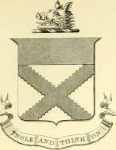
~- ^.
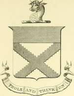
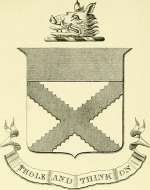
Tweedie of Oliver.
Tweedie of Drummelzier.
Tweedie of Quarter.
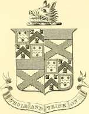
Tweedie-Stodart of Oliver.
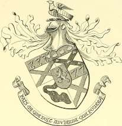
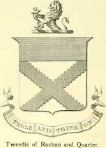
Tweedy of Cloonamahon, Co. Sligo.
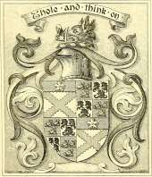
A^
Tweedie of Rawlinson.
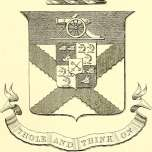
Capt. M. Tweedie, R.A , of Rawlinson.
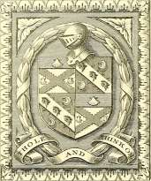
Tweedy of the Hoo, Beds. ; and of Widmore Lodge, Bromley, Kent. (Tweedy of Essex.)
CHAPTER VII.
THE ARMORIAL BEARINGS, TOMBSTONES & MEMORIALS.
NO family history would be complete without some mention of the coats of arms, the crests and the mottoes borne by the various branches ; and of the ancient memorials and the tombstones that cover the graves of its departed members.
It is generally accepted that armorial bearings and surnames were introduced into Scotland about the time of the reign of William the Lion | j^lceo? *"* (i 165-1214). The coat of arms or shield were the symbols emblazoned Iberalbrg In upon the surcoat or on the shield of the man in armour, and the crest was a device affixed in very early times to the warrior's helmet, for the purpose of identity in the confusion of battle. Mottoes, in a strictly heraldic sense, are said to be not earlier than the sixteenth century.
The Lyon Court at Edinburgh is the authority which controls all matters of Arms in Scotland. The oldest register extant of Scottish Arms is one in MS. made by Sir David Lyndsay, Lord Lyon, in 1542, which is now preserved in the Advocates' Library in Edinburgh. This register ^tnOsag's JBoofc which contained a record of 114 noblemen and 320 gentlemen was authenticated ^iP'H'JJf by the Privy Council and is accepted by Lyon Court as an official register in existence prior to the constitution of the Lyon register itself, but the original official records were destroyed by fire early in the sixteenth century.
Stringent regulations about the right to bear Arms were enacted by 127 Parliament 12 of James VI. (1592), and re-enacted and confirmed by 21 Parliament 2 Session 3 of Charles II., 10th September, 1672, ordering s C ote' acts, every man entitled to Coat Armour to re-register within a certain time, but this order was complied with more in the breach than in the observance owing probably to the disturbed state of the country; and the period of limitation for re-registering has been extended from time to time. The title to bear Arms is acquired only by establishing the right in this way or by receiving an original grant from the Lyon-King-of-Arms.
In Scotland the right to the Arms or the crest of a family is confined strictly to the heir of line. All younger sons and their descendants have
a right to the Arms, but not until they matriculate in Lyon Court, when SJoofeot" Crests some mark of cadency is added or a difference granted.
Though not a regulation, it was sometimes a practice upon each occasion of matriculation to alter the crest, which accounts for the large number of different crests borne by members of the same family in Scotland, and the crest is consequently no indication of relationship or the reverse ; the Coat of Arms being the important matter.